Ten audio demonstrations — part 1: A repeat that needs review
Artificial demonstration data; not laboratory results. Research use only. MISSY is not validated.
This is the existing Calm V1 ten-part recording, preserved as a historical illustrated transcript. Its screenshots and answers were not newly recorded against the current build. Commands and numbers below describe that artificial-data recording. They are not current laboratory findings.
Main command: Computer which samples should I repeat
Recorded full answer: 3 current sample-target groups have the exact Repeat outcome under ARTIFICIAL DEMO — NOT VALIDATED. Other review or invalid outcomes are not counted as Repeat. SIM 5; DEMO_SAMPLE_0; DNA_TARGET; rule target: DNA_TARGET; replicate SD 2.18 > 0.5. 2 more. Say Computer more.
*Part 1: A repeat that needs review — actual archived webpage screenshot*
Spoken sequence
Operator: These are artificial data, not laboratory results.
Operator: One sample needs a closer look.
Operator: I open Missy and enter the workspace.
Operator: I load the artificial data and the profile.
Operator: The files are ready for review.
Operator: Computer which samples should I repeat
MISSY: SIM 5; DEMO_SAMPLE_0; DNA_TARGET; rule target: DNA_TARGET; replicate SD 2.18 > 0.5. 2 more.
Chinese subtitle: SIM 5；DEMO_SAMPLE_0；DNA_TARGET。根据靶标规则，重复间标准差 2.18 大于限值 0.5。还有两项。
MISSY: Say Computer more.
Chinese subtitle: 请说 Computer more。
Operator: I keep this finding for review.
Source record
Original structured script. The displayed spoken excerpt may be shorter than the recorded full answer, as declared in that script.
Ten audio demonstrations — part 2: A second run with the same concern
Artificial demonstration data; not laboratory results. Research use only. MISSY is not validated.
This is the existing Calm V1 ten-part recording, preserved as a historical illustrated transcript. Its screenshots and answers were not newly recorded against the current build. Commands and numbers below describe that artificial-data recording. They are not current laboratory findings.
Main command: Computer more
Recorded full answer: SIM 13; DEMO_SAMPLE_0; DNA_TARGET; rule target: DNA_TARGET; replicate SD 2.26 > 0.5. 1 more. Say Computer more.
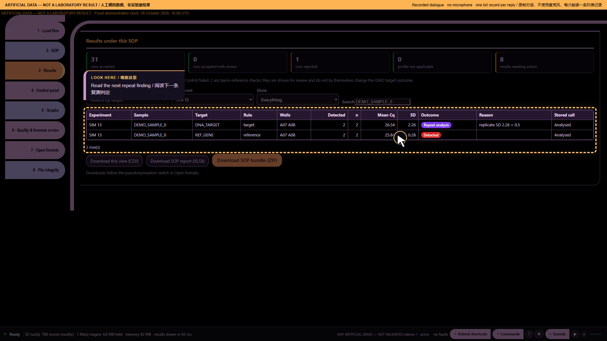
*Part 2: A second run with the same concern — actual archived webpage screenshot*
Spoken sequence
Operator: These are artificial data, not laboratory results.
Operator: I need to check the next run.
Operator: I open Missy and enter the workspace.
Operator: I load the artificial data and the profile.
Operator: The files are ready for review.
Operator: Computer which samples should I repeat
MISSY: SIM 5; DEMO_SAMPLE_0; DNA_TARGET; rule target: DNA_TARGET; replicate SD 2.18 > 0.5. 2 more.
Chinese subtitle: SIM 5；DEMO_SAMPLE_0；DNA_TARGET。根据靶标规则，重复间标准差 2.18 大于限值 0.5。还有两项。
MISSY: Say Computer more.
Chinese subtitle: 请说 Computer more。
Operator: Computer more
MISSY: SIM 13; DEMO_SAMPLE_0; DNA_TARGET; rule target: DNA_TARGET; replicate SD 2.26 > 0.5. 1 more.
Chinese subtitle: SIM 13；DEMO_SAMPLE_0；DNA_TARGET。根据靶标规则，重复间标准差 2.26 大于限值 0.5。还有一项。
MISSY: Say Computer more.
Chinese subtitle: 请说 Computer more。
Operator: This is another run to review.
Source record
Original structured script. The displayed spoken excerpt may be shorter than the recorded full answer, as declared in that script.
Ten audio demonstrations — part 3: Finish the list before reporting
Artificial demonstration data; not laboratory results. Research use only. MISSY is not validated.
This is the existing Calm V1 ten-part recording, preserved as a historical illustrated transcript. Its screenshots and answers were not newly recorded against the current build. Commands and numbers below describe that artificial-data recording. They are not current laboratory findings.
Main command: Computer more
Recorded full answer: SIM 19; DEMO_SAMPLE_0; DNA_TARGET; rule target: DNA_TARGET; replicate SD 2.25 > 0.5. End of list.
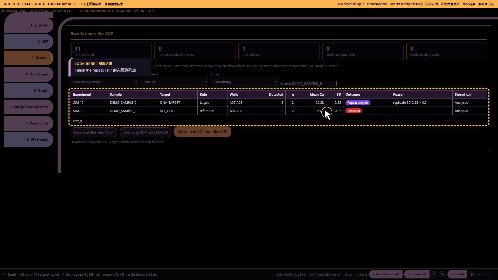
*Part 3: Finish the list before reporting — actual archived webpage screenshot*
Spoken sequence
Operator: These are artificial data, not laboratory results.
Operator: I should finish the list before reporting.
Operator: I open Missy and enter the workspace.
Operator: I load the artificial data and the profile.
Operator: The files are ready for review.
Operator: Computer which samples should I repeat
MISSY: SIM 5; DEMO_SAMPLE_0; DNA_TARGET; rule target: DNA_TARGET; replicate SD 2.18 > 0.5. 2 more.
Chinese subtitle: SIM 5；DEMO_SAMPLE_0；DNA_TARGET。根据靶标规则，重复间标准差 2.18 大于限值 0.5。还有两项。
MISSY: Say Computer more.
Chinese subtitle: 请说 Computer more。
Operator: Computer more
MISSY: SIM 13; DEMO_SAMPLE_0; DNA_TARGET; rule target: DNA_TARGET; replicate SD 2.26 > 0.5. 1 more.
Chinese subtitle: SIM 13；DEMO_SAMPLE_0；DNA_TARGET。根据靶标规则，重复间标准差 2.26 大于限值 0.5。还有一项。
MISSY: Say Computer more.
Chinese subtitle: 请说 Computer more。
Operator: Computer more
MISSY: SIM 19; DEMO_SAMPLE_0; DNA_TARGET; rule target: DNA_TARGET; replicate SD 2.25 > 0.5.
Chinese subtitle: SIM 19；DEMO_SAMPLE_0；DNA_TARGET。根据靶标规则，重复间标准差 2.25 大于限值 0.5。
MISSY: End of list.
Chinese subtitle: 列表结束。
Operator: I have now checked the full repeat list.
Source record
Original structured script. The displayed spoken excerpt may be shorter than the recorded full answer, as declared in that script.
Ten audio demonstrations — part 4: The negative control has a signal
Artificial demonstration data; not laboratory results. Research use only. MISSY is not validated.
This is the existing Calm V1 ten-part recording, preserved as a historical illustrated transcript. Its screenshots and answers were not newly recorded against the current build. Commands and numbers below describe that artificial-data recording. They are not current laboratory findings.
Main command: Computer did any control fail
Recorded full answer: 128 evaluated control groups; 1 groups have the exact Control fail outcome. 0 control-presence criteria need review. This is not a run pass. SIM 9; DEMO NTC; DNA_TARGET; Control fail; rule control: DEMO NTC; amplified in 1/1 (min Cq 34.00 ≤ 36). End of list.
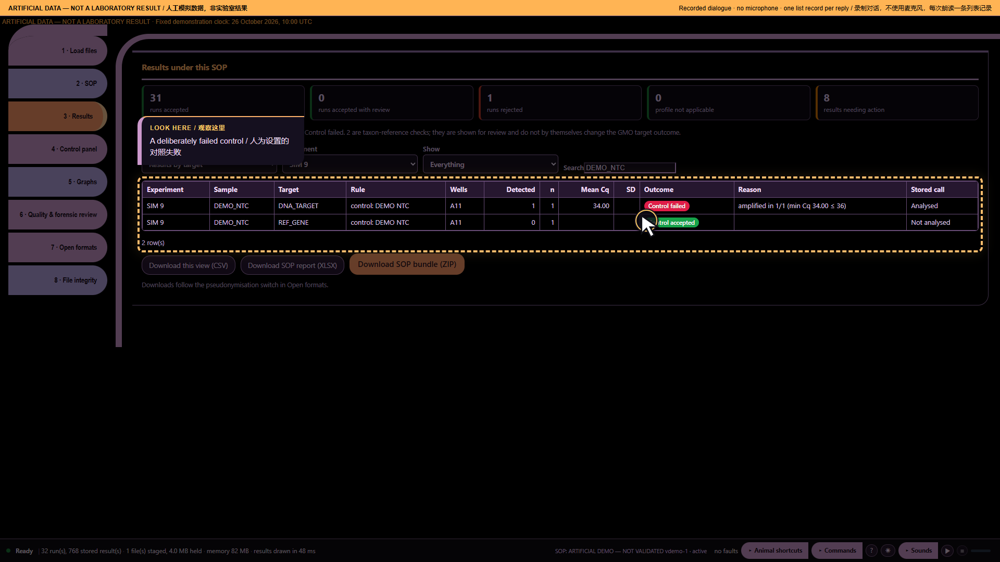
*Part 4: The negative control has a signal — actual archived webpage screenshot*
Spoken sequence
Operator: These are artificial data, not laboratory results.
Operator: I must check the controls before the samples.
Operator: I open Missy and enter the workspace.
Operator: I load the artificial data and the profile.
Operator: The files are ready for review.
Operator: Computer did any control fail
MISSY: SIM 9; DEMO NTC; DNA_TARGET; Control fail; rule control: DEMO NTC; signal detected in 1/1 (min threshold cycle 34.00 ≤ 36).
Chinese subtitle: SIM 9 的 DEMO NTC 阴性对照在 DNA_TARGET 上判定为对照失败。根据该对照规则，1 个反应中有 1 个扩增；最低 Cq 为 34.00，不大于 36。
MISSY: End of list.
Chinese subtitle: 列表结束。
Operator: I review the control before using the results.
Source record
Original structured script. The displayed spoken excerpt may be shorter than the recorded full answer, as declared in that script.
Ten audio demonstrations — part 5: A history that drifts
Artificial demonstration data; not laboratory results. Research use only. MISSY is not validated.
This is the existing Calm V1 ten-part recording, preserved as a historical illustrated transcript. Its screenshots and answers were not newly recorded against the current build. Commands and numbers below describe that artificial-data recording. They are not current laboratory findings.
Main command: Computer how many outliers
Recorded full answer: A-H3 Background fluorescence per channel. 30 assessed points; 4 beyond available limits; 4 points with recorded flags. 0 missing or non-finite points; 0 before baseline. 30 points have available limits. Recorded flags: beyond 3σ.
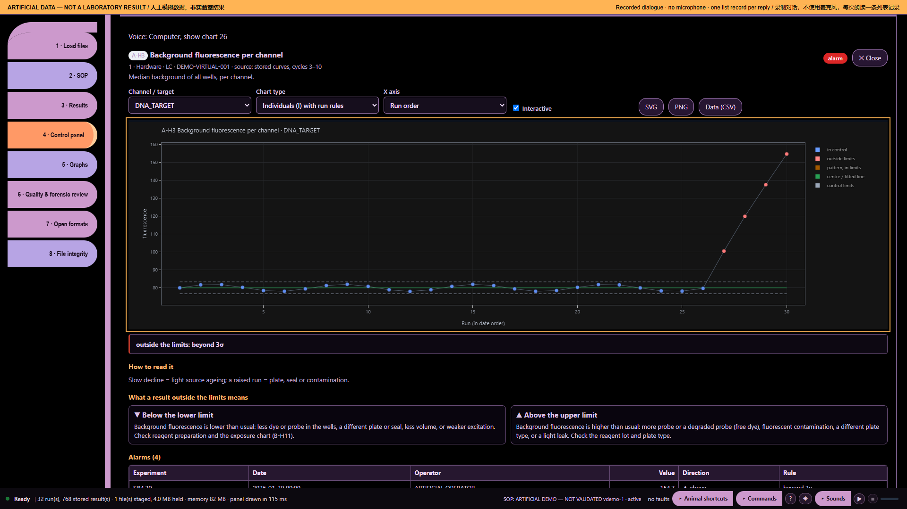
*Part 5: A history that drifts — actual archived webpage screenshot*
Spoken sequence
Operator: These are artificial data, not laboratory results.
Operator: A change appears across several runs.
Operator: I open Missy and enter the workspace.
Operator: I load the artificial data and the profile.
Operator: The files are ready for review.
Operator: Computer how many outliers
MISSY: A-H3 Background fluorescence per channel. 30 assessed points; 4 beyond available limits; 4 points with recorded flags. 0 missing or non-finite points; 0 before baseline. 30 points have available limits.
Chinese subtitle: A-H3：各通道背景荧光。已评估 30 个点；4 个超出可用限值，4 个有标记。缺失或非有限值 0 个，基线之前 0 个。30 个点有可用限值。
MISSY: Recorded flags: beyond 3σ.
Chinese subtitle: 记录标记：超出三倍标准差。
Operator: I review the drift without guessing its cause.
Source record
Original structured script. The displayed spoken excerpt may be shorter than the recorded full answer, as declared in that script.
Ten audio demonstrations — part 6: No ready baseline
Artificial demonstration data; not laboratory results. Research use only. MISSY is not validated.
This is the existing Calm V1 ten-part recording, preserved as a historical illustrated transcript. Its screenshots and answers were not newly recorded against the current build. Commands and numbers below describe that artificial-data recording. They are not current laboratory findings.
Main command: Computer why has this chart no limits
Recorded full answer: B-H1 Peak heating rate (2-s window). 2 assessed points; 0 beyond available limits; 0 points with recorded flags. 0 missing or non-finite points; 0 before baseline. 2 points have available limits. Control baseline is not ready. No recorded flags. This is not proof that all data are nominal.
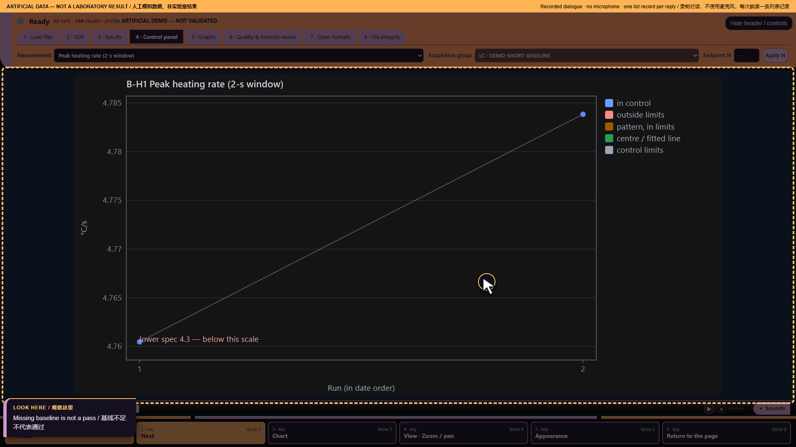
*Part 6: No ready baseline — actual archived webpage screenshot*
Spoken sequence
Operator: These are artificial data, not laboratory results.
Operator: I need more data.
Operator: I open Missy and enter the workspace.
Operator: I load the artificial data and the profile.
Operator: The files are ready for review.
Operator: Computer why has this chart no limits
MISSY: B-H1 Peak heating rate (2-s window). 2 assessed points; 0 beyond available limits; 0 points with recorded flags. 0 missing or non-finite points; 0 before baseline. 2 points have available limits.
Chinese subtitle: B-H1：峰值升温速率，两秒窗口。已评估 2 个点；超出限值 0 个，有标记 0 个。缺失或非有限值 0 个，基线之前 0 个。2 个点有可用限值。
MISSY: Control baseline is not ready.
Chinese subtitle: 控制基线尚未准备就绪。
MISSY: No recorded flags.
Chinese subtitle: 没有记录标记。
MISSY: This is not proof that all data are nominal.
Chinese subtitle: 这不证明所有数据都正常。
Operator: I need more evidence before calling this normal.
Source record
Original structured script. The displayed spoken excerpt may be shorter than the recorded full answer, as declared in that script.
Ten audio demonstrations — part 7: Compare the right histories
Artificial demonstration data; not laboratory results. Research use only. MISSY is not validated.
This is the existing Calm V1 ten-part recording, preserved as a historical illustrated transcript. Its screenshots and answers were not newly recorded against the current build. Commands and numbers below describe that artificial-data recording. They are not current laboratory findings.
Main command: Computer are these runs comparable
Recorded full answer: 2 distinct recorded platform/instrument labels; 1 decoded protocol signatures; 0 run views lack an instrument identifier and 0 lack a decoded protocol. The loaded records include different cohorts. Select one instrument, protocol and acquisition context before comparing control charts.
*Part 7: Compare the right histories — actual archived webpage screenshot*
Spoken sequence
Operator: These are artificial data, not laboratory results.
Operator: These histories may not belong together.
Operator: I open Missy and enter the workspace.
Operator: I load the artificial data and the profile.
Operator: The files are ready for review.
Operator: Computer are these runs comparable
MISSY: 2 distinct recorded platform/instrument labels; 1 decoded protocol signatures; 0 run views lack an instrument identifier and 0 lack a decoded protocol.
Chinese subtitle: 记录中有两个不同的平台或仪器标签，一个已解码的方案签名。缺少仪器标识的运行 0 个；缺少已解码方案的运行 0 个。
MISSY: The loaded records include different cohorts.
Chinese subtitle: 已加载记录包含不同的数据组。
MISSY: Select one instrument, protocol and acquisition context before comparing control charts.
Chinese subtitle: 比较控制图前，请选择相同的仪器、方案及采集条件。
Operator: I compare one matching group at a time.
Source record
Original structured script. The displayed spoken excerpt may be shorter than the recorded full answer, as declared in that script.
Ten audio demonstrations — part 8: A missing protocol
Artificial demonstration data; not laboratory results. Research use only. MISSY is not validated.
This is the existing Calm V1 ten-part recording, preserved as a historical illustrated transcript. Its screenshots and answers were not newly recorded against the current build. Commands and numbers below describe that artificial-data recording. They are not current laboratory findings.
Main command: Computer what protocol was used
Recorded full answer: Decoded protocol signatures for all loaded run views. Missing signatures are stated; no protocol name is inferred. Run 1; ARTIFICIAL_DEMO / DEMO_RUN_01; (protocol not decoded); Run 2; ARTIFICIAL_DEMO / DEMO_RUN_02; (protocol not decoded); Run 3; ARTIFICIAL_DEMO / DEMO_RUN_03; (protocol not decoded); Run 4; ARTIFICIAL_DEMO / DEMO_RUN_04; (protocol not decoded); Run 5; ARTIFICIAL_DEMO / DEMO_RUN_05; (protocol not decoded); Run 6; ARTIFICIAL_DEMO / DEMO_RUN_06; (protocol not decoded); Run 7; ARTIFICIAL_DEMO / DEMO_RUN_07; (protocol not decoded); Run 8; ARTIFICIAL_DEMO / DEMO_RUN_08; (protocol not decoded). 24 more. Say Computer more.
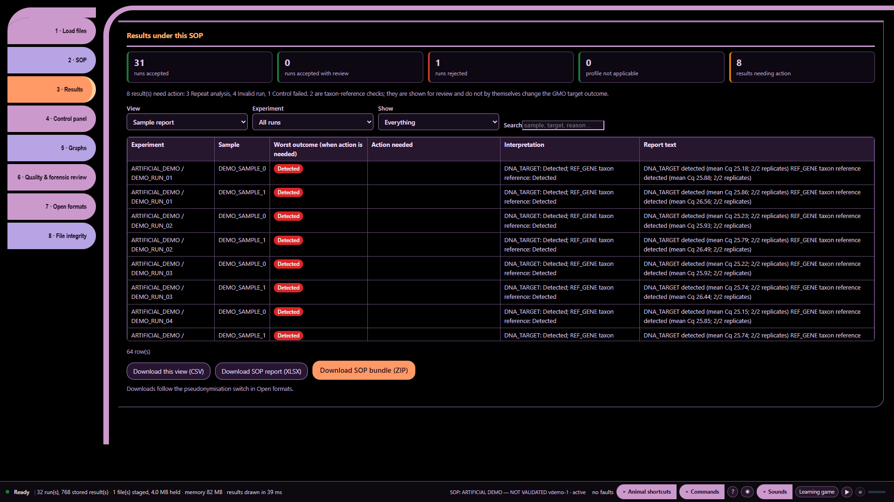
*Part 8: A missing protocol — actual archived webpage screenshot*
Spoken sequence
Operator: These are artificial data, not laboratory results.
Operator: The values alone do not describe the method.
Operator: I open Missy and enter the workspace.
Operator: I load the artificial data and the profile.
Operator: The files are ready for review.
Operator: Computer what protocol was used
MISSY: Decoded protocol signatures for all loaded run views.
Chinese subtitle: 以下为全部已加载运行的已解码方案签名。
MISSY: Missing signatures are stated; no protocol name is inferred.
Chinese subtitle: 缺失签名会明确说明，不推断方案名称。
MISSY: Run 1; ARTIFICIAL_DEMO / DEMO_RUN_01; (protocol not decoded).
Chinese subtitle: 运行 1：ARTIFICIAL_DEMO / DEMO_RUN_01；方案未解码。
Operator: I record the missing method information.
Source record
Original structured script. The displayed spoken excerpt may be shorter than the recorded full answer, as declared in that script.
Ten audio demonstrations — part 9: A duration I cannot verify
Artificial demonstration data; not laboratory results. Research use only. MISSY is not validated.
This is the existing Calm V1 ten-part recording, preserved as a historical illustrated transcript. Its screenshots and answers were not newly recorded against the current build. Commands and numbers below describe that artificial-data recording. They are not current laboratory findings.
Main command: Computer how long did run one take
Recorded full answer: Run 1 has no usable recorded start-to-end duration.
*Part 9: A duration I cannot verify — actual archived webpage screenshot*
Spoken sequence
Operator: These are artificial data, not laboratory results.
Operator: I check the duration.
Operator: I open Missy and enter the workspace.
Operator: I load the artificial data and the profile.
Operator: The files are ready for review.
Operator: Computer how long did run one take
MISSY: Run 1 has no usable recorded start-to-end duration.
Chinese subtitle: 运行 1 没有可用的已记录开始至结束时长。
Operator: I leave the duration as unavailable.
Source record
Original structured script. The displayed spoken excerpt may be shorter than the recorded full answer, as declared in that script.
Ten audio demonstrations — part 10: Findings are not validation
Artificial demonstration data; not laboratory results. Research use only. MISSY is not validated.
This is the existing Calm V1 ten-part recording, preserved as a historical illustrated transcript. Its screenshots and answers were not newly recorded against the current build. Commands and numbers below describe that artificial-data recording. They are not current laboratory findings.
Main command: Computer are these results validated
Recorded full answer: This is a research-use tool, not a laboratory validation certificate. You can review the method configuration and documentation for your own validation process.
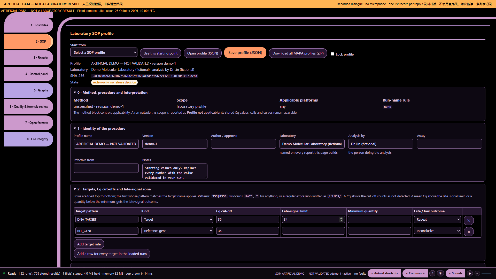
*Part 10: Findings are not validation — actual archived webpage screenshot*
Spoken sequence
Operator: These are artificial data, not laboratory results.
Operator: A report does not make results validated.
Operator: I open Missy and enter the workspace.
Operator: I load the artificial data and the profile.
Operator: The files are ready for review.
Operator: Computer are these results validated
MISSY: This is a research-use tool, not a laboratory validation certificate.
Chinese subtitle: 这是研究用工具，不是实验室验证证书。
MISSY: You can review the method configuration and documentation for your own validation process.
Chinese subtitle: 您可审核方法配置和文档，用于自己的验证流程。
Operator: The laboratory remains responsible for release decisions.
Source record
Original structured script. The displayed spoken excerpt may be shorter than the recorded full answer, as declared in that script.
Functions and their visible interface context
Artificial demonstration data; not laboratory results. Research use only. MISSY is not validated.
Screenshots illustrate UI context. They are not a claim that every function is tested, nor a function-level execution trace. Several functions share a screen. Internal algorithms and dependencies remain linked to their exact source without a fabricated screenshot.
core/advisory/engine.js
157 function entries. No unique screen is attributed to this internal/support module; see its exact source and validation record.
Code chapters: Code-001-01, Code-001-02, Code-001-03.
core/advisory/panel.js
148 function entries. No unique screen is attributed to this internal/support module; see its exact source and validation record.
Code chapters: Code-002-01, Code-002-02, Code-002-03.
core/analysis/loaded_overview.js
58 function entries. No unique screen is attributed to this internal/support module; see its exact source and validation record.
Code chapters: Code-003-01, Code-003-02.
core/analysis/pcrd_independent.js
105 function entries. No unique screen is attributed to this internal/support module; see its exact source and validation record.
Code chapters: Code-004-01, Code-004-02.
core/biorad/cfx_rdml_views.js
64 function entries. Chart user-interface context. Synthetic RDML does not demonstrate native Bio-Rad decoding.
Code chapters: Code-005-01, Code-005-02.
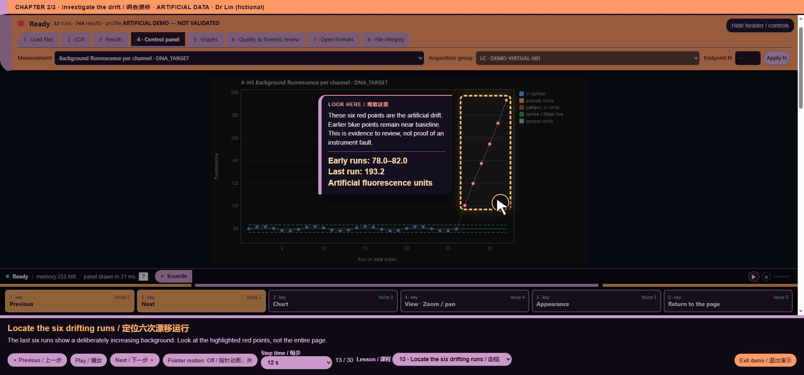
*Illustrative UI context: core/biorad/cfx_rdml_views.js*
core/biorad/graph_viewport.js
7 function entries. Chart user-interface context. Synthetic RDML does not demonstrate native Bio-Rad decoding.
Code chapters: Code-006-01.
*Illustrative UI context: core/biorad/graph_viewport.js*
core/biorad/legacy_view_adapter.js
34 function entries. Chart user-interface context. Synthetic RDML does not demonstrate native Bio-Rad decoding.
Code chapters: Code-007-01.
*Illustrative UI context: core/biorad/legacy_view_adapter.js*
core/biorad/lifecycle.js
4 function entries. Chart user-interface context. Synthetic RDML does not demonstrate native Bio-Rad decoding.
Code chapters: Code-008-01.
*Illustrative UI context: core/biorad/lifecycle.js*
core/biorad/pcrd_views.js
177 function entries. Chart user-interface context. Synthetic RDML does not demonstrate native Bio-Rad decoding.
Code chapters: Code-009-01, Code-009-02, Code-009-03, Code-009-04.
*Illustrative UI context: core/biorad/pcrd_views.js*
core/biorad/reference_console_style.js
2 function entries. Chart user-interface context. Synthetic RDML does not demonstrate native Bio-Rad decoding.
Code chapters: Code-010-01.
*Illustrative UI context: core/biorad/reference_console_style.js*
core/biorad/unified_shell.js
52 function entries. Chart user-interface context. Synthetic RDML does not demonstrate native Bio-Rad decoding.
Code chapters: Code-011-01, Code-011-02.
*Illustrative UI context: core/biorad/unified_shell.js*
core/biorad/zpcr_compact_report.js
80 function entries. Report preparation in the webpage; not a PDF screenshot.
Code chapters: Code-012-01, Code-012-02.
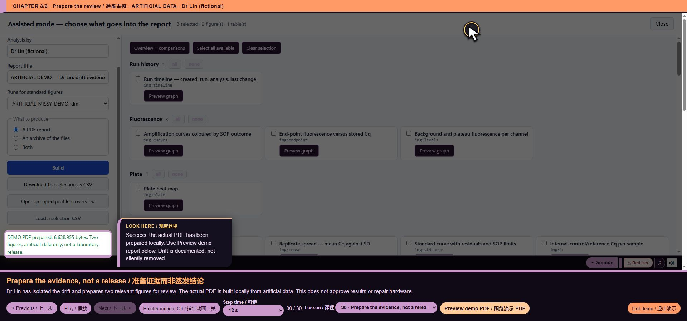
*Illustrative UI context: core/biorad/zpcr_compact_report.js*
core/biorad/zpcr_comparative_modes.js
45 function entries. Chart user-interface context. Synthetic RDML does not demonstrate native Bio-Rad decoding.
Code chapters: Code-013-01.
*Illustrative UI context: core/biorad/zpcr_comparative_modes.js*
core/biorad/zpcr_control_charts.js
22 function entries. Chart user-interface context. Synthetic RDML does not demonstrate native Bio-Rad decoding.
Code chapters: Code-014-01.
*Illustrative UI context: core/biorad/zpcr_control_charts.js*
core/biorad/zpcr_gates_dark.js
46 function entries. Chart user-interface context. Synthetic RDML does not demonstrate native Bio-Rad decoding.
Code chapters: Code-015-01.
*Illustrative UI context: core/biorad/zpcr_gates_dark.js*
core/biorad/zpcr_guide_charts.js
19 function entries. Chart user-interface context. Synthetic RDML does not demonstrate native Bio-Rad decoding.
Code chapters: Code-016-01.
*Illustrative UI context: core/biorad/zpcr_guide_charts.js*
core/biorad/zpcr_manual_endpoint.js
46 function entries. Chart user-interface context. Synthetic RDML does not demonstrate native Bio-Rad decoding.
Code chapters: Code-017-01.
*Illustrative UI context: core/biorad/zpcr_manual_endpoint.js*
core/biorad/zpcr_modes_reports.js
60 function entries. Report preparation in the webpage; not a PDF screenshot.
Code chapters: Code-018-01, Code-018-02.
*Illustrative UI context: core/biorad/zpcr_modes_reports.js*
core/biorad/zpcr_single_measurement.js
77 function entries. Chart user-interface context. Synthetic RDML does not demonstrate native Bio-Rad decoding.
Code chapters: Code-019-01, Code-019-02.
*Illustrative UI context: core/biorad/zpcr_single_measurement.js*
core/charts/catalogue.js
62 function entries. Chart user-interface context. Synthetic RDML does not demonstrate native Bio-Rad decoding.
Code chapters: Code-020-01, Code-020-02.
*Illustrative UI context: core/charts/catalogue.js*
core/charts/thermal.js
32 function entries. Instrument/hardware reference context, distinct from measured performance.
Code chapters: Code-021-01.
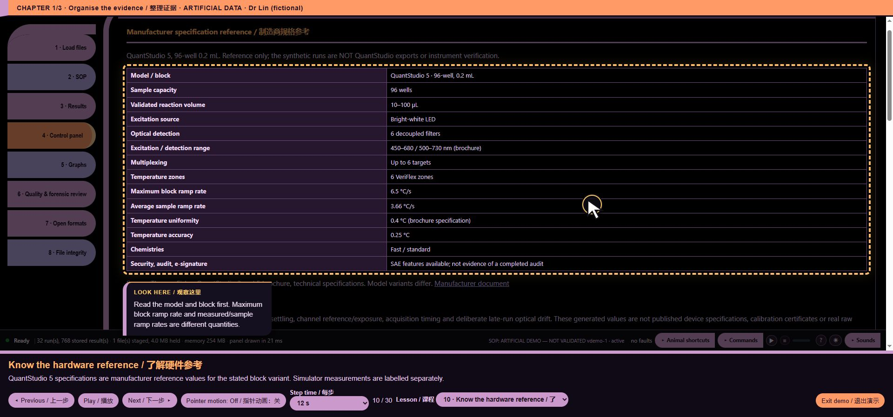
*Illustrative UI context: core/charts/thermal.js*
core/container_metadata.js
55 function entries. No unique screen is attributed to this internal/support module; see its exact source and validation record.
Code chapters: Code-022-01, Code-022-02.
core/efficiency.js
14 function entries. Calibration limitation example.
Code chapters: Code-023-01.
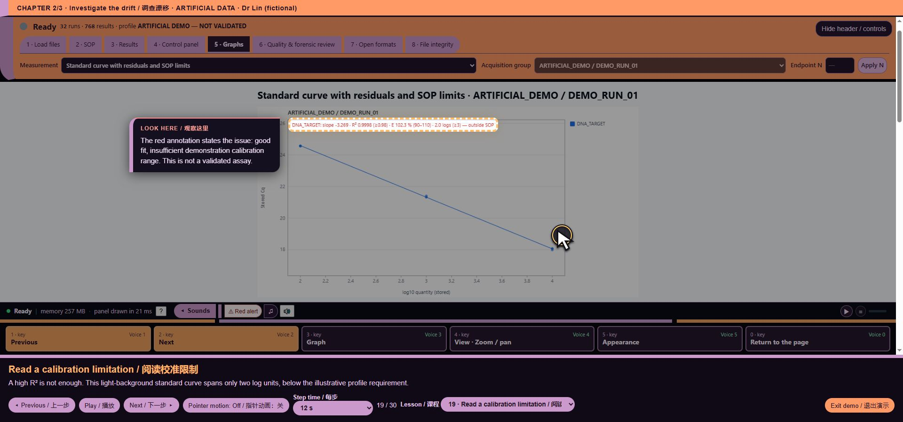
*Illustrative UI context: core/efficiency.js*
core/exports/open_formats.js
42 function entries. Export scope and available outputs.
Code chapters: Code-024-01.
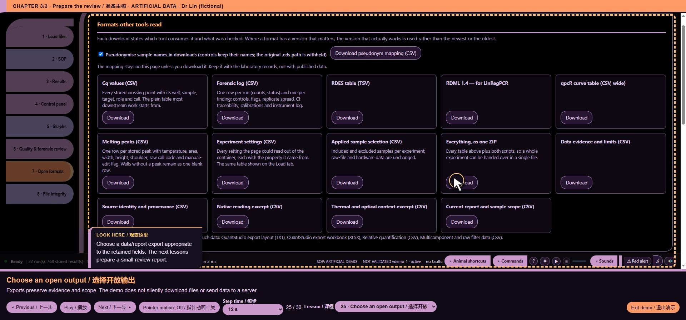
*Illustrative UI context: core/exports/open_formats.js*
core/forensic_events.js
1 function entries. Quality-review context and sample mapping.
Code chapters: Code-025-01.
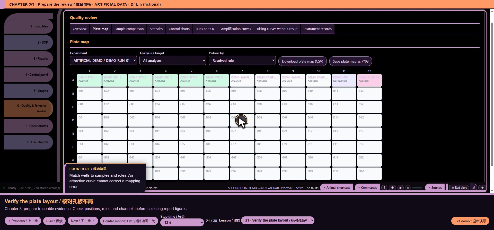
*Illustrative UI context: core/forensic_events.js*
core/helpers.js
13 function entries. No unique screen is attributed to this internal/support module; see its exact source and validation record.
Code chapters: Code-026-01.
core/hooks.js
12 function entries. No unique screen is attributed to this internal/support module; see its exact source and validation record.
Code chapters: Code-027-01.
core/i18n/english_scientific_wording.js
1 function entries. No unique screen is attributed to this internal/support module; see its exact source and validation record.
Code chapters: Code-028-01.
core/i18n/report_chinese.js
23 function entries. Report preparation in the webpage; not a PDF screenshot.
Code chapters: Code-029-01.
*Illustrative UI context: core/i18n/report_chinese.js*
core/i18n/zh_coverage.js
34 function entries. No unique screen is attributed to this internal/support module; see its exact source and validation record.
Code chapters: Code-030-01, Code-030-02.
core/i18n/zh_manual_terminology.js
6 function entries. No unique screen is attributed to this internal/support module; see its exact source and validation record.
Code chapters: Code-031-01.
core/i18n/zh_terminology_review_r2.js
4 function entries. Quality-review context and sample mapping.
Code chapters: Code-032-01.
*Illustrative UI context: core/i18n/zh_terminology_review_r2.js*
core/mara_engine.js
104 function entries. SOP editor context. Artificial demo rules are not MARA validation evidence.
Code chapters: Code-033-01, Code-033-02, Code-033-03.
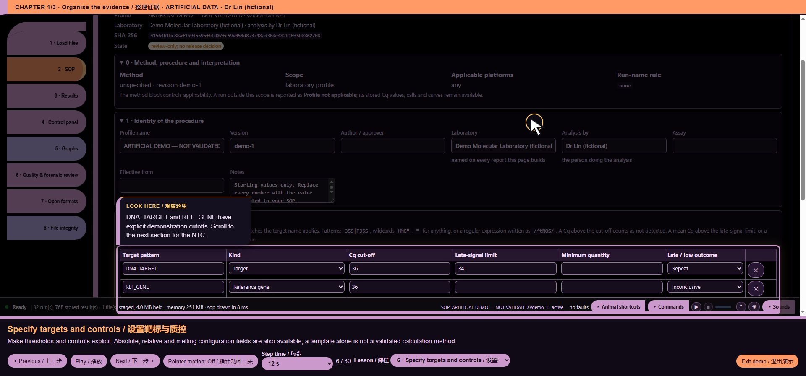
*Illustrative UI context: core/mara_engine.js*
core/mara_results.js
105 function entries. SOP editor context. Artificial demo rules are not MARA validation evidence.
Code chapters: Code-034-01, Code-034-02, Code-034-03.
*Illustrative UI context: core/mara_results.js*
core/mara1012_profiles.js
27 function entries. SOP editor context. Artificial demo rules are not MARA validation evidence.
Code chapters: Code-035-01.
*Illustrative UI context: core/mara1012_profiles.js*
core/md5.js
5 function entries. Source/integrity review. This picture does not demonstrate cryptographic correctness.
Code chapters: Code-036-01.
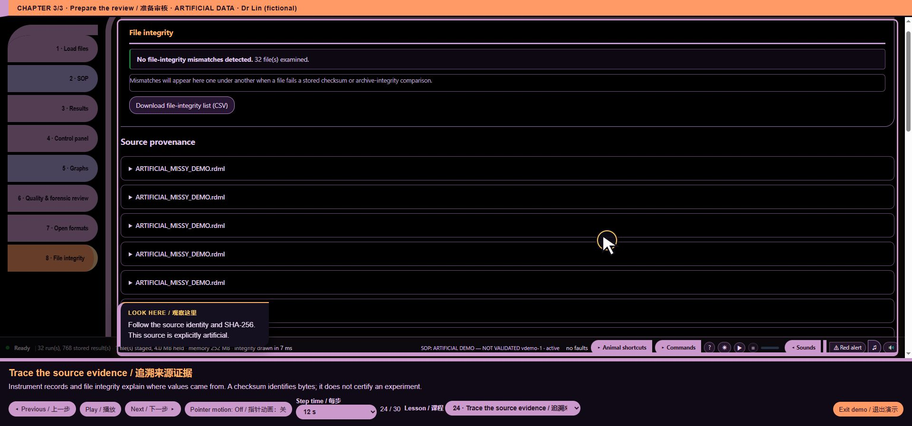
*Illustrative UI context: core/md5.js*
core/pseudonyms.js
16 function entries. Export scope and available outputs.
Code chapters: Code-037-01.
*Illustrative UI context: core/pseudonyms.js*
core/readers_registry.js
17 function entries. File-intake presentation; the pictured demonstration uses artificial RDML, not a vendor-format validation.
Code chapters: Code-038-01.
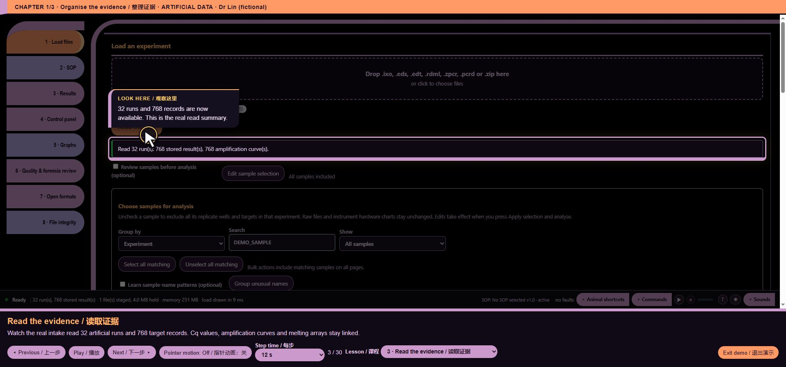
*Illustrative UI context: core/readers_registry.js*
core/roles.js
4 function entries. No unique screen is attributed to this internal/support module; see its exact source and validation record.
Code chapters: Code-039-01.
core/rq_rows.js
4 function entries. No unique screen is attributed to this internal/support module; see its exact source and validation record.
Code chapters: Code-040-01.
core/run_model.js
8 function entries. File-intake presentation; the pictured demonstration uses artificial RDML, not a vendor-format validation.
Code chapters: Code-041-01.
*Illustrative UI context: core/run_model.js*
core/statistics.js
18 function entries. Grouped statistics presentation.
Code chapters: Code-042-01.
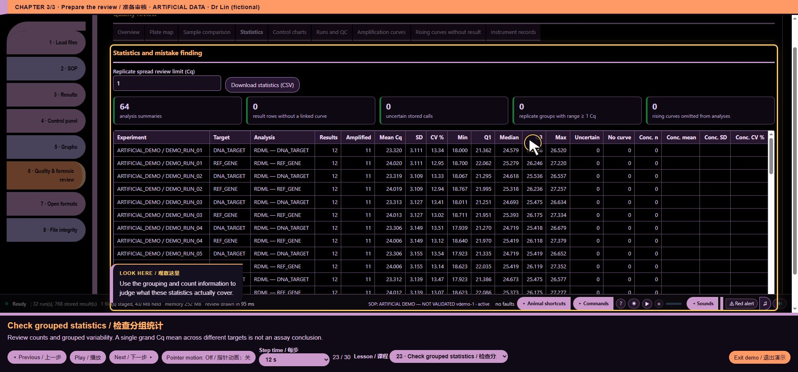
*Illustrative UI context: core/statistics.js*
core/test_surface.js
7 function entries. No unique screen is attributed to this internal/support module; see its exact source and validation record.
Code chapters: Code-043-01.
core/ui/build_identity.js
3 function entries. Startup status and build context.
Code chapters: Code-044-01.
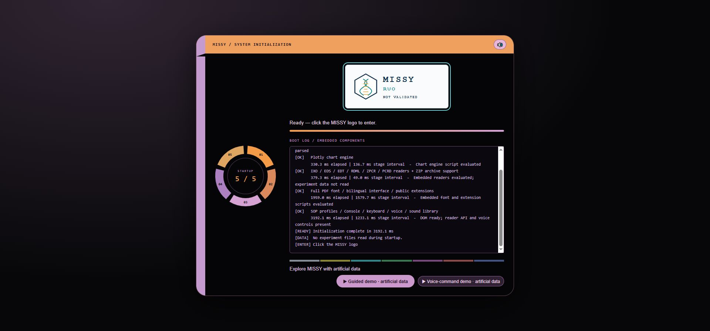
*Illustrative UI context: core/ui/build_identity.js*
core/ui/calibration_metadata.js
17 function entries. Calibration limitation example.
Code chapters: Code-045-01.
*Illustrative UI context: core/ui/calibration_metadata.js*
core/ui/computer_sound_events.js
14 function entries. Audio controls in the Console walkthrough; a still image cannot prove audibility.
Code chapters: Code-046-01.
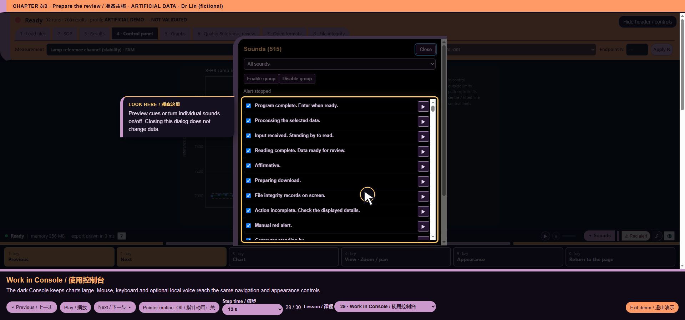
*Illustrative UI context: core/ui/computer_sound_events.js*
core/ui/console_layout.js
5 function entries. Chart user-interface context. Synthetic RDML does not demonstrate native Bio-Rad decoding.
Code chapters: Code-047-01.
*Illustrative UI context: core/ui/console_layout.js*
core/ui/console_voice.js
188 function entries. Voice navigation and Console presentation; dynamic answers are documented in the dialogue page.
Code chapters: Code-048-01, Code-048-02, Code-048-03, Code-048-04, Code-048-05.
*Illustrative UI context: core/ui/console_voice.js*
core/ui/evidence_a11y.js
5 function entries. No unique screen is attributed to this internal/support module; see its exact source and validation record.
Code chapters: Code-049-01.
core/ui/evidence_guide.js
6 function entries. No unique screen is attributed to this internal/support module; see its exact source and validation record.
Code chapters: Code-050-01.
core/ui/evidence_summary.js
30 function entries. No unique screen is attributed to this internal/support module; see its exact source and validation record.
Code chapters: Code-051-01.
core/ui/experiment_sop_editor.js
20 function entries. SOP editor context. Artificial demo rules are not MARA validation evidence.
Code chapters: Code-052-01.
*Illustrative UI context: core/ui/experiment_sop_editor.js*
core/ui/export_dictionary.js
11 function entries. Export scope and available outputs.
Code chapters: Code-053-01.
*Illustrative UI context: core/ui/export_dictionary.js*
core/ui/footer_command_menu.js
24 function entries. Expanding command menu.
Code chapters: Code-054-01.
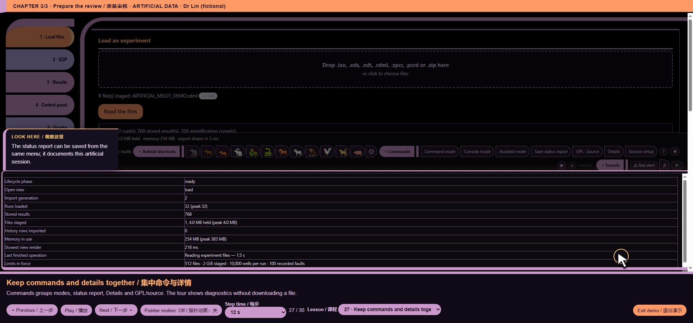
*Illustrative UI context: core/ui/footer_command_menu.js*
core/ui/guided_demo.js
151 function entries. Guided demo controller and highlighted evidence.
Code chapters: Code-055-01, Code-055-02, Code-055-03.
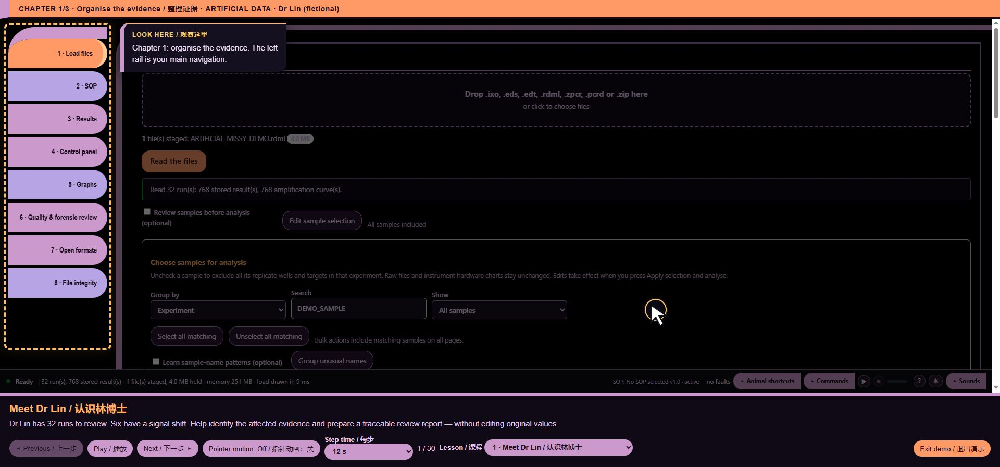
*Illustrative UI context: core/ui/guided_demo.js*
core/ui/instrument_context.js
36 function entries. Instrument/hardware reference context, distinct from measured performance.
Code chapters: Code-056-01.
*Illustrative UI context: core/ui/instrument_context.js*
core/ui/learning_game.js
34 function entries. No unique screen is attributed to this internal/support module; see its exact source and validation record.
Code chapters: Code-057-01.
core/ui/learning_report.js
10 function entries. Report preparation in the webpage; not a PDF screenshot.
Code chapters: Code-058-01.
*Illustrative UI context: core/ui/learning_report.js*
core/ui/learning_workspace.js
207 function entries. No unique screen is attributed to this internal/support module; see its exact source and validation record.
Code chapters: Code-059-01, Code-059-02, Code-059-03, Code-059-04.
core/ui/local_password.js
9 function entries. No unique screen is attributed to this internal/support module; see its exact source and validation record.
Code chapters: Code-060-01.
core/ui/mara_evidence_editor.js
16 function entries. SOP editor context. Artificial demo rules are not MARA validation evidence.
Code chapters: Code-061-01.
*Illustrative UI context: core/ui/mara_evidence_editor.js*
core/ui/mara_sop_editor.js
16 function entries. SOP editor context. Artificial demo rules are not MARA validation evidence.
Code chapters: Code-062-01.
*Illustrative UI context: core/ui/mara_sop_editor.js*
core/ui/mascot_controls.js
35 function entries. Animal shortcut controls.
Code chapters: Code-063-01.
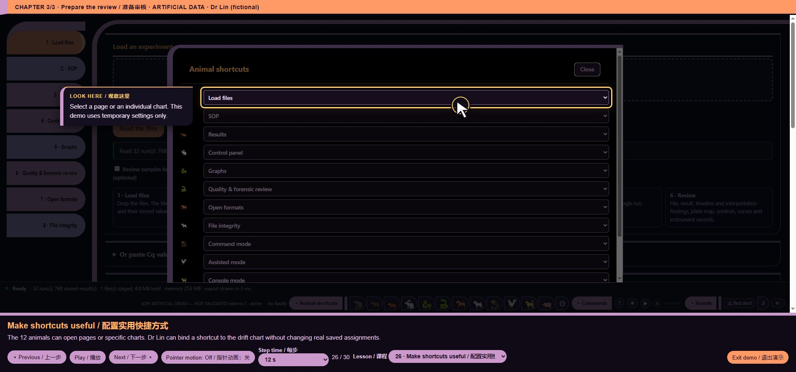
*Illustrative UI context: core/ui/mascot_controls.js*
core/ui/method_narratives.js
19 function entries. SOP editor context. Artificial demo rules are not MARA validation evidence.
Code chapters: Code-064-01.
*Illustrative UI context: core/ui/method_narratives.js*
core/ui/native_inspector.js
45 function entries. Quality-review context and sample mapping.
Code chapters: Code-065-01, Code-065-02.
*Illustrative UI context: core/ui/native_inspector.js*
core/ui/navigation_tones.js
10 function entries. Audio controls in the Console walkthrough; a still image cannot prove audibility.
Code chapters: Code-066-01.
*Illustrative UI context: core/ui/navigation_tones.js*
core/ui/provenance_details.js
31 function entries. Source/integrity review. This picture does not demonstrate cryptographic correctness.
Code chapters: Code-067-01.
*Illustrative UI context: core/ui/provenance_details.js*
core/ui/reader_inventory.js
12 function entries. File-intake presentation; the pictured demonstration uses artificial RDML, not a vendor-format validation.
Code chapters: Code-068-01.
*Illustrative UI context: core/ui/reader_inventory.js*
core/ui/release_checksum.js
4 function entries. No unique screen is attributed to this internal/support module; see its exact source and validation record.
Code chapters: Code-069-01.
core/ui/render.js
23 function entries. No unique screen is attributed to this internal/support module; see its exact source and validation record.
Code chapters: Code-070-01.
core/ui/report_workflow.js
41 function entries. Report preparation in the webpage; not a PDF screenshot.
Code chapters: Code-071-01.
*Illustrative UI context: core/ui/report_workflow.js*
core/ui/scope_snapshot.js
26 function entries. No unique screen is attributed to this internal/support module; see its exact source and validation record.
Code chapters: Code-072-01.
core/ui/session_setup.js
15 function entries. No unique screen is attributed to this internal/support module; see its exact source and validation record.
Code chapters: Code-073-01.
core/ui/sop_results_gallery.js
551 function entries. SOP editor context. Artificial demo rules are not MARA validation evidence.
Code chapters: Code-074-01, Code-074-02, Code-074-03, Code-074-04, Code-074-05, Code-074-06, Code-074-07, Code-074-08, Code-074-09, Code-074-10, Code-074-11.
*Illustrative UI context: core/ui/sop_results_gallery.js*
core/ui/sop_selection.js
2 function entries. SOP editor context. Artificial demo rules are not MARA validation evidence.
Code chapters: Code-075-01.
*Illustrative UI context: core/ui/sop_selection.js*
core/ui/sound_settings.js
27 function entries. Audio controls in the Console walkthrough; a still image cannot prove audibility.
Code chapters: Code-076-01.
*Illustrative UI context: core/ui/sound_settings.js*
core/ui/source_matches.js
15 function entries. Source/integrity review. This picture does not demonstrate cryptographic correctness.
Code chapters: Code-077-01.
*Illustrative UI context: core/ui/source_matches.js*
core/ui/state.js
11 function entries. No unique screen is attributed to this internal/support module; see its exact source and validation record.
Code chapters: Code-078-01.
core/ui/voice_demo.js
98 function entries. Voice navigation and Console presentation; dynamic answers are documented in the dialogue page.
Code chapters: Code-079-01, Code-079-02, Code-079-03.
*Illustrative UI context: core/ui/voice_demo.js*
core/ui/workspace_entry.js
14 function entries. No unique screen is attributed to this internal/support module; see its exact source and validation record.
Code chapters: Code-080-01.
core/xlsx.js
7 function entries. Report preparation in the webpage; not a PDF screenshot.
Code chapters: Code-081-01.
*Illustrative UI context: core/xlsx.js*
readers/eds/cc_extract.js
8 function entries. File-intake presentation; the pictured demonstration uses artificial RDML, not a vendor-format validation.
Code chapters: Code-082-01.
*Illustrative UI context: readers/eds/cc_extract.js*
readers/eds/parse_1_utilities.js
21 function entries. File-intake presentation; the pictured demonstration uses artificial RDML, not a vendor-format validation.
Code chapters: Code-083-01.
*Illustrative UI context: readers/eds/parse_1_utilities.js*
readers/eds/records.js
90 function entries. File-intake presentation; the pictured demonstration uses artificial RDML, not a vendor-format validation.
Code chapters: Code-084-01, Code-084-02.
*Illustrative UI context: readers/eds/records.js*
readers/eds/signal_rows.js
8 function entries. File-intake presentation; the pictured demonstration uses artificial RDML, not a vendor-format validation.
Code chapters: Code-085-01.
*Illustrative UI context: readers/eds/signal_rows.js*
readers/eds/workbook.js
5 function entries. File-intake presentation; the pictured demonstration uses artificial RDML, not a vendor-format validation.
Code chapters: Code-086-01.
*Illustrative UI context: readers/eds/workbook.js*
readers/ixo/cc_extract.js
7 function entries. File-intake presentation; the pictured demonstration uses artificial RDML, not a vendor-format validation.
Code chapters: Code-087-01.
*Illustrative UI context: readers/ixo/cc_extract.js*
readers/ixo/decode.js
169 function entries. File-intake presentation; the pictured demonstration uses artificial RDML, not a vendor-format validation.
Code chapters: Code-088-01, Code-088-02, Code-088-03, Code-088-04.
*Illustrative UI context: readers/ixo/decode.js*
readers/ixo/integrity.js
2 function entries. Source/integrity review. This picture does not demonstrate cryptographic correctness.
Code chapters: Code-089-01.
*Illustrative UI context: readers/ixo/integrity.js*
readers/pcrd/reader.js
33 function entries. File-intake presentation; the pictured demonstration uses artificial RDML, not a vendor-format validation.
Code chapters: Code-090-01.
*Illustrative UI context: readers/pcrd/reader.js*
readers/rdml/cfx_adapter.js
17 function entries. File-intake presentation; the pictured demonstration uses artificial RDML, not a vendor-format validation.
Code chapters: Code-091-01.
*Illustrative UI context: readers/rdml/cfx_adapter.js*
readers/register_public.js
15 function entries. File-intake presentation; the pictured demonstration uses artificial RDML, not a vendor-format validation.
Code chapters: Code-092-01.
*Illustrative UI context: readers/register_public.js*
readers/zpcr/reader.js
75 function entries. File-intake presentation; the pictured demonstration uses artificial RDML, not a vendor-format validation.
Code chapters: Code-093-01, Code-093-02.
*Illustrative UI context: readers/zpcr/reader.js*
readers/zpcr/to_run_model.js
13 function entries. File-intake presentation; the pictured demonstration uses artificial RDML, not a vendor-format validation.
Code chapters: Code-094-01.
*Illustrative UI context: readers/zpcr/to_run_model.js*
shell/public_browser_guard.html
2 function entries. No unique screen is attributed to this internal/support module; see its exact source and validation record.
Code chapters: Code-095-01.
shell/public_calm_voice.html
12 function entries. Voice navigation and Console presentation; dynamic answers are documented in the dialogue page.
Code chapters: Code-096-01.
*Illustrative UI context: shell/public_calm_voice.html*
shell/public_legal_zh.html
1 function entries. No unique screen is attributed to this internal/support module; see its exact source and validation record.
Code chapters: Code-097-01.
shell/public_startup_sound.html
78 function entries. Audio controls in the Console walkthrough; a still image cannot prove audibility.
Code chapters: Code-098-01, Code-098-02.
*Illustrative UI context: shell/public_startup_sound.html*
variants/public/core/sop.js
228 function entries. SOP editor context. Artificial demo rules are not MARA validation evidence.
Code chapters: Code-099-01, Code-099-02, Code-099-03, Code-099-04, Code-099-05.
*Illustrative UI context: variants/public/core/sop.js*
variants/public/hooks/core/charts/extract.js
105 function entries. Chart user-interface context. Synthetic RDML does not demonstrate native Bio-Rad decoding.
Code chapters: Code-100-01, Code-100-02.
*Illustrative UI context: variants/public/hooks/core/charts/extract.js*
variants/public/hooks/core/charts/panel.js
271 function entries. Chart user-interface context. Synthetic RDML does not demonstrate native Bio-Rad decoding.
Code chapters: Code-101-01, Code-101-02, Code-101-03, Code-101-04, Code-101-05, Code-101-06.
*Illustrative UI context: variants/public/hooks/core/charts/panel.js*
variants/public/hooks/core/exports/catalogue.js
95 function entries. Export scope and available outputs.
Code chapters: Code-102-01, Code-102-02.
*Illustrative UI context: variants/public/hooks/core/exports/catalogue.js*
variants/public/hooks/core/flatten.js
22 function entries. File-intake presentation; the pictured demonstration uses artificial RDML, not a vendor-format validation.
Code chapters: Code-103-01.
*Illustrative UI context: variants/public/hooks/core/flatten.js*
variants/public/hooks/core/i18n_constants.js
11 function entries. No unique screen is attributed to this internal/support module; see its exact source and validation record.
Code chapters: Code-104-01.
variants/public/hooks/core/review.js
444 function entries. Quality-review context and sample mapping.
Code chapters: Code-105-01, Code-105-02, Code-105-03, Code-105-04, Code-105-05, Code-105-06, Code-105-07, Code-105-08, Code-105-09, Code-105-10.
*Illustrative UI context: variants/public/hooks/core/review.js*
variants/public/hooks/core/ui/console_views.js
178 function entries. Chart user-interface context. Synthetic RDML does not demonstrate native Bio-Rad decoding.
Code chapters: Code-106-01, Code-106-02, Code-106-03, Code-106-04.
*Illustrative UI context: variants/public/hooks/core/ui/console_views.js*
variants/public/hooks/core/ui/console.js
111 function entries. Chart user-interface context. Synthetic RDML does not demonstrate native Bio-Rad decoding.
Code chapters: Code-107-01, Code-107-02, Code-107-03.
*Illustrative UI context: variants/public/hooks/core/ui/console.js*
variants/public/hooks/core/ui/report_command_modes.js
259 function entries. Report preparation in the webpage; not a PDF screenshot.
Code chapters: Code-108-01, Code-108-02, Code-108-03, Code-108-04, Code-108-05, Code-108-06.
*Illustrative UI context: variants/public/hooks/core/ui/report_command_modes.js*
variants/public/hooks/core/wiring.js
29 function entries. No unique screen is attributed to this internal/support module; see its exact source and validation record.
Code chapters: Code-109-01.
variants/public/intake.js
20 function entries. File-intake presentation; the pictured demonstration uses artificial RDML, not a vendor-format validation.
Code chapters: Code-110-01.
*Illustrative UI context: variants/public/intake.js*
variants/public/integrity.js
2 function entries. Source/integrity review. This picture does not demonstrate cryptographic correctness.
Code chapters: Code-111-01.
*Illustrative UI context: variants/public/integrity.js*
variants/public/processing_state.js
16 function entries. No unique screen is attributed to this internal/support module; see its exact source and validation record.
Code chapters: Code-112-01.
variants/public/readers/eds/parse_2_container.js
131 function entries. File-intake presentation; the pictured demonstration uses artificial RDML, not a vendor-format validation.
Code chapters: Code-113-01, Code-113-02, Code-113-03.
*Illustrative UI context: variants/public/readers/eds/parse_2_container.js*
variants/public/readers/eds/to_run_model.js
39 function entries. File-intake presentation; the pictured demonstration uses artificial RDML, not a vendor-format validation.
Code chapters: Code-114-01.
*Illustrative UI context: variants/public/readers/eds/to_run_model.js*
variants/public/readers/rdml/reader.js
32 function entries. File-intake presentation; the pictured demonstration uses artificial RDML, not a vendor-format validation.
Code chapters: Code-115-01, Code-115-02.
*Illustrative UI context: variants/public/readers/rdml/reader.js*
variants/public/startup_head.html
12 function entries. Startup status and build context.
Code chapters: Code-116-01.
*Illustrative UI context: variants/public/startup_head.html*
variants/public/zip.js
14 function entries. File-intake presentation; the pictured demonstration uses artificial RDML, not a vendor-format validation.
Code chapters: Code-117-01.
*Illustrative UI context: variants/public/zip.js*
vendor/html2canvas.js
529 function entries. Dependency internals have no independent user-interface screen.
Code chapters: Code-118-01, Code-118-02, Code-118-03, Code-118-04, Code-118-05, Code-118-06, Code-118-07, Code-118-08, Code-118-09, Code-118-10, Code-118-11.
vendor/plotly-basic.html
5023 function entries. Dependency internals have no independent user-interface screen.
Code chapters: Code-119-01, Code-119-02, Code-119-03, Code-119-04, Code-119-05, Code-119-06, Code-119-07, Code-119-08, Code-119-09, Code-119-10, Code-119-11, Code-119-12, Code-119-13, Code-119-14, Code-119-15, Code-119-16, Code-119-17, Code-119-18, Code-119-19, Code-119-20, Code-119-21, Code-119-22, Code-119-23, Code-119-24, Code-119-25, Code-119-26, Code-119-27, Code-119-28, Code-119-29, Code-119-30, Code-119-31, Code-119-32, Code-119-33, Code-119-34, Code-119-35, Code-119-36, Code-119-37, Code-119-38, Code-119-39, Code-119-40, Code-119-41, Code-119-42, Code-119-43, Code-119-44, Code-119-45, Code-119-46, Code-119-47, Code-119-48, Code-119-49, Code-119-50, Code-119-51, Code-119-52, Code-119-53, Code-119-54, Code-119-55, Code-119-56, Code-119-57, Code-119-58, Code-119-59, Code-119-60, Code-119-61, Code-119-62, Code-119-63, Code-119-64, Code-119-65, Code-119-66, Code-119-67, Code-119-68, Code-119-69, Code-119-70, Code-119-71, Code-119-72, Code-119-73, Code-119-74, Code-119-75, Code-119-76, Code-119-77, Code-119-78, Code-119-79, Code-119-80, Code-119-81, Code-119-82, Code-119-83, Code-119-84, Code-119-85, Code-119-86, Code-119-87, Code-119-88, Code-119-89, Code-119-90, Code-119-91, Code-119-92, Code-119-93, Code-119-94, Code-119-95, Code-119-96, Code-119-97, Code-119-98, Code-119-99, Code-119-100, Code-119-101, Code-119-102, Code-119-103, Code-119-104, Code-119-105, Code-119-106.
Voice-command workflow — screenshots and complete dialogue
Artificial demonstration data; not laboratory results. Research use only. MISSY is not validated.
All 69 steps below were replayed against the live 2026.10.31.demolabels1 demo. Text is the returned command/action and answer. Commands were emulated as text; this is not microphone or speaker validation. The 32 screenshot checkpoints show the actual page. Audio is represented by text between pictures.
1. Chapter 1
Scripted action: Chapter 1. Setup and intake.
MISSY: ARTIFICIAL DATA — NOT A LABORATORY RESULT. The operator is Dr Lin in a fictional laboratory. Commands are supplied as text; no microphone is being tested.
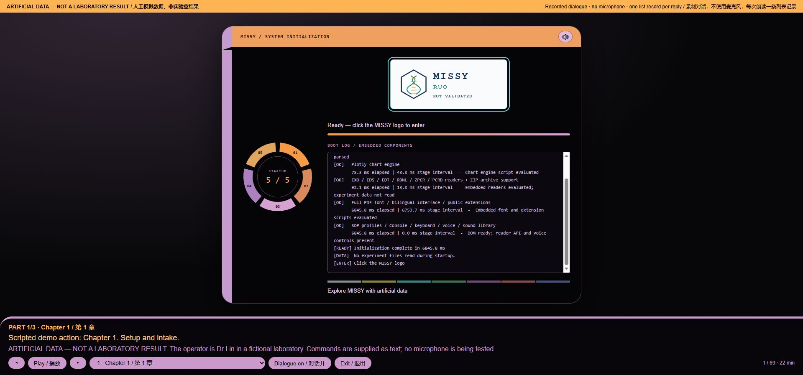
*Voice workflow step 1: Chapter 1*
Intent: `None`. Loaded runs: 0. Recorded audio payload: 99482 bytes.
2. Open MISSY
Scripted action: I click the MISSY logo to enter.
MISSY: MISSY / SESSION SETUP
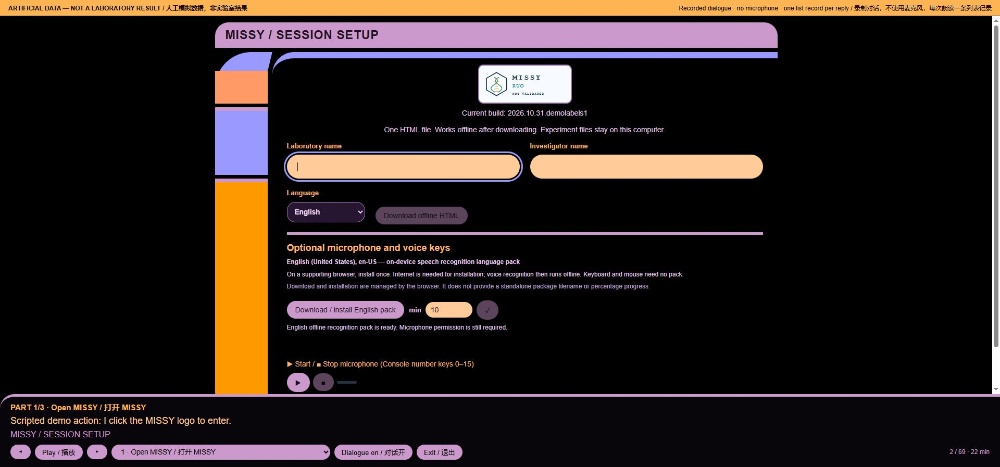
*Voice workflow step 2: Open MISSY*
Intent: `None`. Loaded runs: 0. Recorded audio payload: 29578 bytes.
3. Enter a fictional identity
Scripted action: I enter a fictional laboratory and investigator.
MISSY: Operator record. Investigator field: Dr Lin (fictional). This field does not authenticate a person.
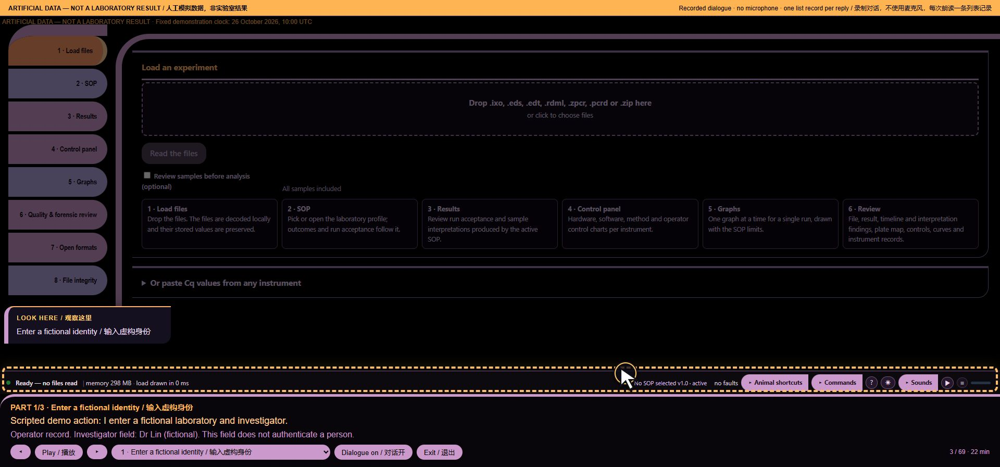
*Voice workflow step 3: Enter a fictional identity*
Intent: `None`. Loaded runs: 0. Recorded audio payload: 78087 bytes.
4. Who is speaking?
Operator command: Computer who am I
MISSY: Operator record. Investigator field: Dr Lin (fictional). This field does not authenticate a person.
Intent: `q:operator`. Loaded runs: 0. Recorded audio payload: 70956 bytes.
5. Demonstration clock
Operator command: Computer what time is it
MISSY: Device clock. 26/10/2026, 10:00:00. Device local time.
Intent: `f:clock`. Loaded runs: 0. Recorded audio payload: 68684 bytes.
6. Current publication
Operator command: Computer what build is this
MISSY: Build identification. Current publication: 2026.10.31.demolabels1. One offline HTML file. Publication identity is recorded separately in the release documentation.
Intent: `q:build`. Loaded runs: 0. Recorded audio payload: 119073 bytes.
7. Language and recognition
Operator command: Computer what language are you speaking
MISSY: The interface language is English. Recognition uses the English offline pack. Speech output requires an installed local voice for the selected language.
Intent: `q:lang`. Loaded runs: 0. Recorded audio payload: 87752 bytes.
8. Supported formats
Operator command: Computer what formats do you read
MISSY: Supported inputs. IXO, EDS, EDT, RDML, ZPCR and PCRD experiment files, plus ZIP archives. Available data depends on the source file.
Intent: `q:formats`. Loaded runs: 0. Recorded audio payload: 106456 bytes.
9. Choose embedded data
Scripted action: I select the embedded artificial file. File selection is a scripted demo action.
MISSY: 1 file(s) staged: ARTIFICIAL_MISSY_DEMO.rdml 4.0 MB
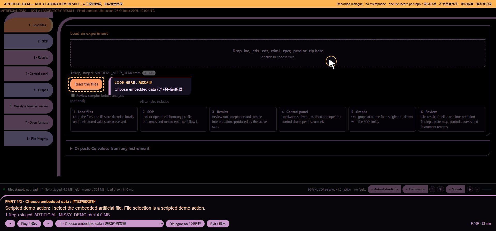
*Voice workflow step 9: Choose embedded data*
Intent: `None`. Loaded runs: 0. Recorded audio payload: 83312 bytes.
10. Ready to read
Operator command: Computer what are you doing
MISSY: Files selected. Ready to read.
Intent: `q:status`. Loaded runs: 0. Recorded audio payload: 34959 bytes.
11. Read artificial runs
Scripted action: I press Read files. This is a scripted demo action.
MISSY: Read 32 run(s): 768 stored result(s), 768 amplification curve(s).
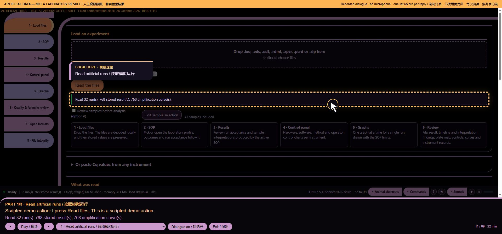
*Voice workflow step 11: Read artificial runs*
Intent: `None`. Loaded runs: 32. Recorded audio payload: 85950 bytes.
12. Count runs and records
Operator command: Computer how many runs
MISSY: 32 runs loaded. 768 stored result rows. This count does not include separate melting or relative-quantity tables.
Intent: `q:counts`. Loaded runs: 32. Recorded audio payload: 80960 bytes.
13. Source files and run views
Operator command: Computer how many files
MISSY: 1 distinct recorded source filenames; 32 decoded runs. File names may be unavailable or shared by several runs.
Intent: `f:files`. Loaded runs: 32. Recorded audio payload: 73359 bytes.
14. Identify one run
Operator command: Computer identify run three
MISSY: Run 3. SIM 3. 24 stored result rows; 2 recorded targets.
Intent: `o:identify run:three`. Loaded runs: 32. Recorded audio payload: 62361 bytes.
15. Find the latest recorded run
Operator command: Computer which run is newest
MISSY: Newest available timestamp; 0 run views have no usable timestamp. Ties are listed; this is not the time files were read. Run 32; SIM 32; 2026-02-01T09:00:00.000Z; recorded run start. End of list.
Intent: `data:newest`. Loaded runs: 32. Recorded audio payload: 172599 bytes.
16. Recorded instruments
Operator command: Computer how many instruments
MISSY: 2 distinct recorded platform/instrument labels; 0 run views have no recorded instrument identifier. Labels are not independently verified device identities. LC · DEMO-VIRTUAL-001. 1 more. Say Computer more.
Intent: `data:instruments`. Loaded runs: 32. Recorded audio payload: 137411 bytes.
17. Compare compatible histories
Operator command: Computer are these runs comparable
MISSY: Comparison scope. 2 distinct recorded platform/instrument labels; 1 decoded protocol signatures; 0 run views lack an instrument identifier and 0 lack a decoded protocol. The loaded records include different cohorts. Select one instrument, protocol and acquisition context before comparing control charts.
Intent: `data:cohort`. Loaded runs: 32. Recorded audio payload: 166642 bytes.
18. Recorded evidence, not damage diagnosis
Operator command: Computer damage report
MISSY: Damage report. Recorded evidence: 0 recorded integrity mismatch findings; 0 software faults; 0 locked PCRD views. Counts are findings and views, not files. No new scan was run. Unchecked records are not declared intact. This is not a hardware diagnosis.
Intent: `ship:damage`. Loaded runs: 32. Recorded audio payload: 167295 bytes.
19. Chapter 2
Scripted action: Chapter 2. Follow the evidence.
MISSY: ARTIFICIAL DATA — NOT A LABORATORY RESULT. We will examine planted repeat findings, a failed control, optical drift and an incomplete baseline.
Intent: `None`. Loaded runs: 32. Recorded audio payload: 90208 bytes.
20. Create a review-only profile
Scripted action: I create a fictional review-only method. Profile editing is a scripted demo action.
MISSY: Method identification. Active profile: ARTIFICIAL DEMO — NOT VALIDATED. Version: demo-1.
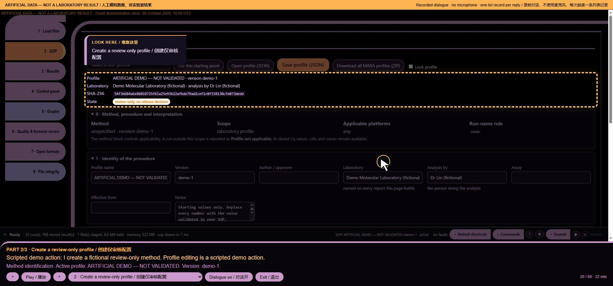
*Voice workflow step 20: Create a review-only profile*
Intent: `None`. Loaded runs: 32. Recorded audio payload: 91462 bytes.
21. Active method
Operator command: Computer which profile is active
MISSY: Method identification. Active profile: ARTIFICIAL DEMO — NOT VALIDATED. Version: demo-1.
Intent: `q:profile`. Loaded runs: 32. Recorded audio payload: 75919 bytes.
22. Reference assignment
Operator command: Computer which target is the reference
MISSY: Reference assignments. Profile-declared reference rules: 1. This is an assignment, not proof of detection. REF_GENE; match: REF_GENE. End of list.
Intent: `data:references`. Loaded runs: 32. Recorded audio payload: 115024 bytes.
23. Loaded targets
Operator command: Computer what targets are loaded
MISSY: 2 distinct recorded target labels across all loaded stored result rows. This does not count uncollected channels. DNA_TARGET. 1 more. Say Computer more.
Intent: `data:targets`. Loaded runs: 32. Recorded audio payload: 102590 bytes.
24. Read real profile summaries
Operator command: Computer read the results
MISSY: Read the results. 64 current sample-level profile summaries. Samples are grouped within each run and current selection. This is not a count of raw reactions. 59; Positive. 2 more. Say Computer more.
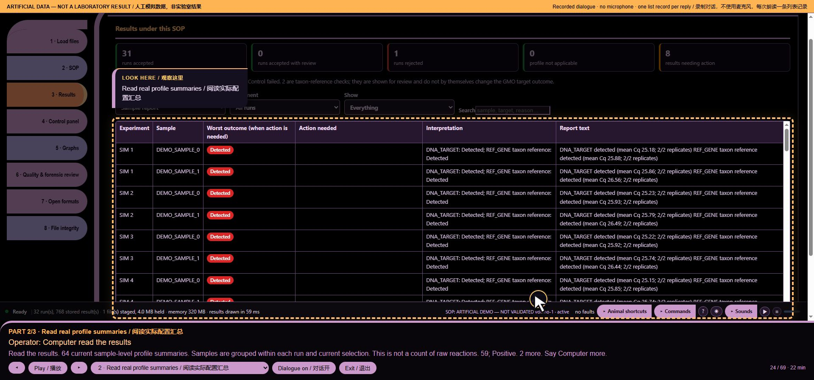
*Voice workflow step 24: Read real profile summaries*
Intent: `data:results`. Loaded runs: 32. Recorded audio payload: 135504 bytes.
25. Planted repeat findings
Operator command: Computer which samples should I repeat
MISSY: 3 current sample-target groups have the exact Repeat outcome under ARTIFICIAL DEMO — NOT VALIDATED. Other review or invalid outcomes are not counted as Repeat. SIM 5; DEMO_SAMPLE_0; DNA_TARGET; rule target: DNA_TARGET; replicate SD 2.18 > 0.5. 2 more. Say Computer more.
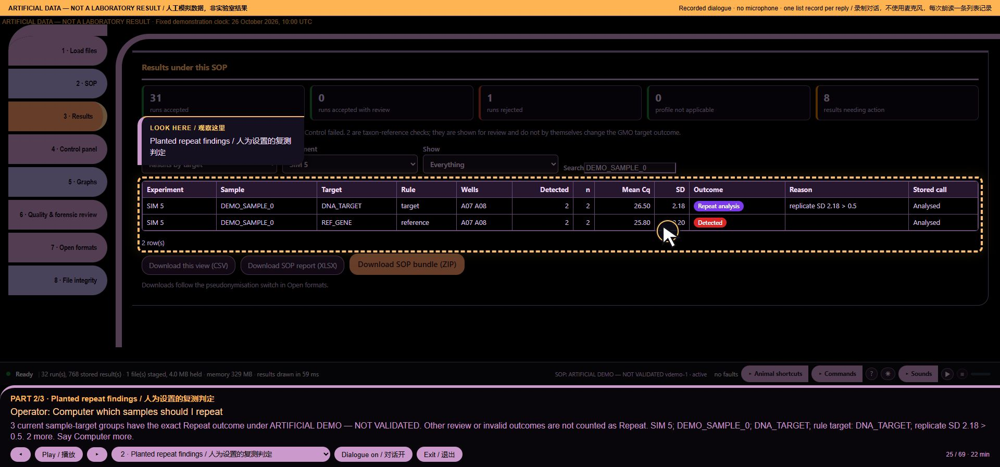
*Voice workflow step 25: Planted repeat findings*
Intent: `data:repeat`. Loaded runs: 32. Recorded audio payload: 186678 bytes.
26. Read the next repeat finding
Operator command: Computer more
MISSY: SIM 13; DEMO_SAMPLE_0; DNA_TARGET; rule target: DNA_TARGET; replicate SD 2.26 > 0.5. 1 more. Say Computer more.
Intent: `f:more`. Loaded runs: 32. Recorded audio payload: 110662 bytes.
27. Finish the repeat list
Operator command: Computer more
MISSY: SIM 19; DEMO_SAMPLE_0; DNA_TARGET; rule target: DNA_TARGET; replicate SD 2.25 > 0.5. End of list.
Intent: `f:more`. Loaded runs: 32. Recorded audio payload: 99533 bytes.
28. A deliberately failed control
Operator command: Computer did any control fail
MISSY: 128 evaluated control groups; 1 groups have the exact Control fail outcome. 0 control-presence criteria need review. This is not a run pass. SIM 9; DEMO NTC; DNA_TARGET; Control fail; rule control: DEMO NTC; amplified in 1/1 (min Cq 34.00 ≤ 36). End of list.
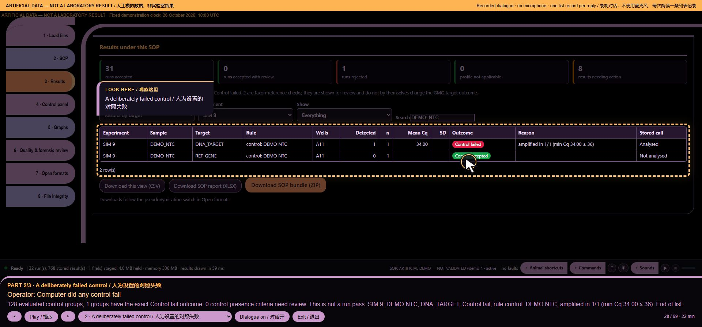
*Voice workflow step 28: A deliberately failed control*
Intent: `data:controlfail`. Loaded runs: 32. Recorded audio payload: 217398 bytes.
29. Assigned standards, not calibration approval
Operator command: Computer how many standards
MISSY: 384 included stored result rows have the exact Standard role, across 32 run views. This counts rows, not distinct concentrations or calibration curves.
Intent: `data:standards`. Loaded runs: 32. Recorded audio payload: 97706 bytes.
30. Hardware reference
Scripted action: I open the hardware reference. Manufacturer specifications and artificial measurements are different.
MISSY: Manufacturer specification reference / 制造商规格参考
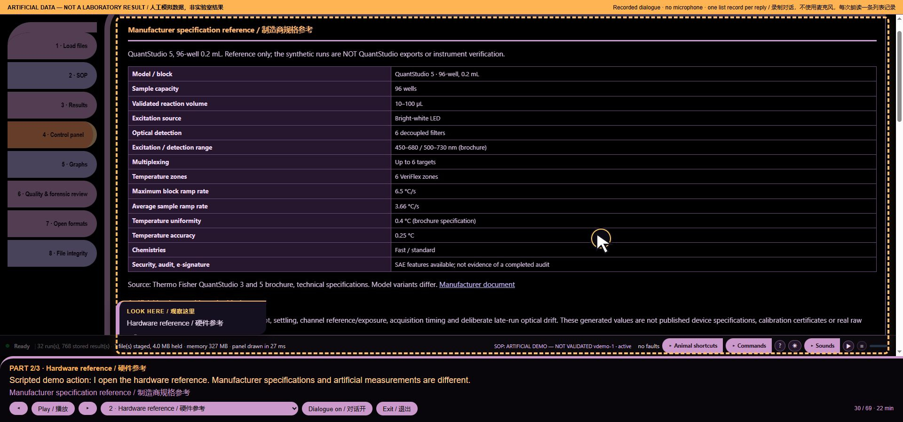
*Voice workflow step 30: Hardware reference*
Intent: `None`. Loaded runs: 32. Recorded audio payload: 56746 bytes.
31. Chart by its number
Operator command: Computer show chart 1
MISSY: Display chart 1. Chart 1. B-H1 Peak heating rate (2-s window).
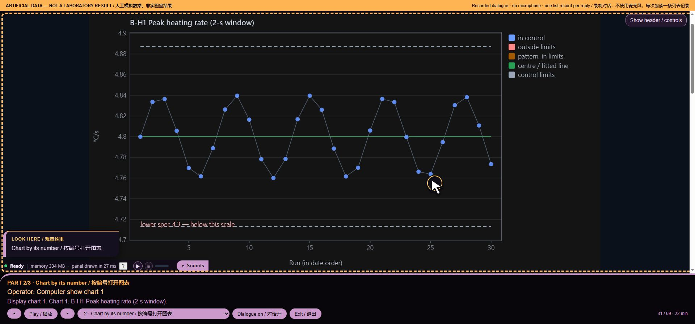
*Voice workflow step 31: Chart by its number*
Intent: `chart:1`. Loaded runs: 32. Recorded audio payload: 61029 bytes.
32. Chart inventory
Operator command: Computer run diagnostic on module charts
MISSY: 110 registered chart definitions. This is an inventory, not a diagnostic test.
Intent: `o:run diagnostic on module:charts`. Loaded runs: 32. Recorded audio payload: 66698 bytes.
33. Identify the current chart
Operator command: Computer which chart is this
MISSY: Chart 1 of 110. Peak heating rate (2-s window).
Intent: `data:chart`. Loaded runs: 32. Recorded audio payload: 50162 bytes.
34. Open the optical history
Operator command: Computer show chart 26
MISSY: Display chart 26. Chart 26. A-H3 Background fluorescence per channel.
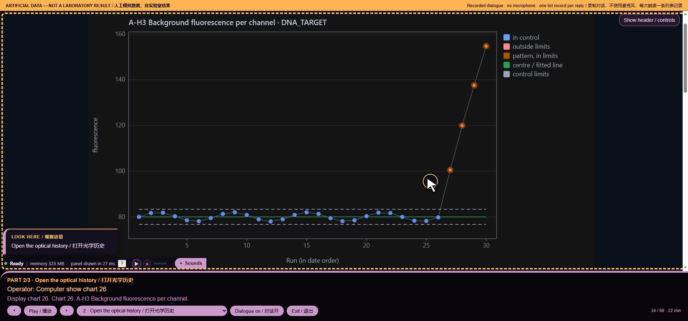
*Voice workflow step 34: Open the optical history*
Intent: `chart:26`. Loaded runs: 32. Recorded audio payload: 69676 bytes.
35. Measure the planted drift
Operator command: Computer how many outliers
MISSY: Chart review. A-H3 Background fluorescence per channel. 30 assessed points; 4 beyond available limits; 4 points with recorded flags. 0 missing or non-finite points; 0 before baseline. 30 points have available limits. Recorded flags: beyond 3σ.
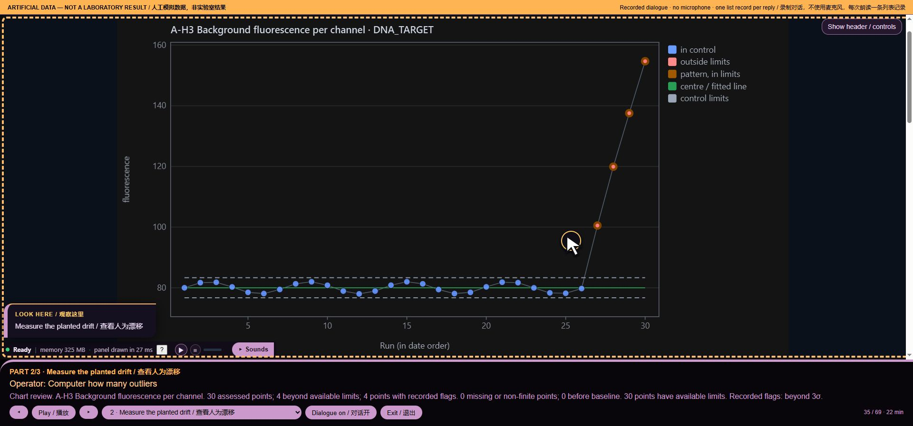
*Voice workflow step 35: Measure the planted drift*
Intent: `q:analyse`. Loaded runs: 32. Recorded audio payload: 164030 bytes.
36. Read the current magnification
Operator command: Computer what is the magnification
MISSY: Console chart zoom 100 percent; horizontal pan 0; vertical pan 0.
Intent: `o:zoom`. Loaded runs: 32. Recorded audio payload: 55831 bytes.
37. Zoom without changing values
Operator command: Computer zoom in
MISSY: Zoom in. Console command applied. Zoom 125 percent.
Intent: `nav:zoom in`. Loaded runs: 32. Recorded audio payload: 56746 bytes.
38. Confirm the zoom
Operator command: Computer what is the magnification
MISSY: Console chart zoom 125 percent; horizontal pan 0; vertical pan 0.
Intent: `o:zoom`. Loaded runs: 32. Recorded audio payload: 61317 bytes.
39. Reset the view
Operator command: Computer reset the view
MISSY: Reset view. Console command applied. Zoom 100 percent.
Intent: `nav:zoom reset`. Loaded runs: 32. Recorded audio payload: 53611 bytes.
40. White chart background
Operator command: Computer white background
MISSY: Light chart background. Chart background changed.
Intent: `theme:light`. Loaded runs: 32. Recorded audio payload: 43527 bytes.
41. Dark chart background
Operator command: Computer dark background
MISSY: Dark chart background. Chart background changed.
Intent: `theme:dark`. Loaded runs: 32. Recorded audio payload: 43841 bytes.
42. Label this as a drill
Operator command: Computer this is a drill
MISSY: Drill label enabled. Subsequent manual alert changes are tagged drill in the separate, in-memory interface log. Scientific records and exports are unchanged.
Intent: `ship:drill:1`. Loaded runs: 32. Recorded audio payload: 90443 bytes.
43. Manual alarm for the scenario
Operator command: Computer red alert
MISSY: Manual red alert requested. Sound depends on browser audio availability. Say Computer cancel red alert to stop it. This does not indicate a detected data or instrument fault.
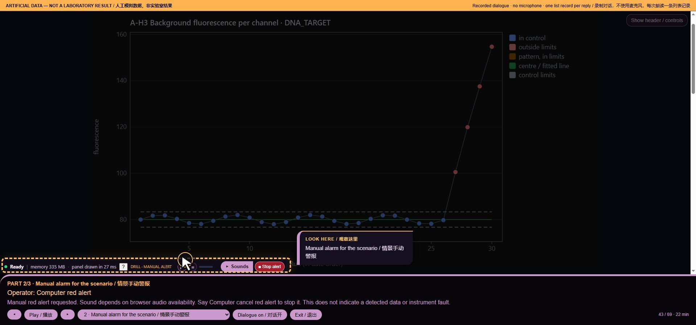
*Voice workflow step 43: Manual alarm for the scenario*
Intent: `ship:red`. Loaded runs: 32. Recorded audio payload: 99403 bytes.
44. Stop the manual alarm
Operator command: Computer cancel red alert
MISSY: Manual red alert stopped; drill label cleared. This is not a green or passing scientific verdict.
Intent: `ship:standdown`. Loaded runs: 32. Recorded audio payload: 61761 bytes.
45. Switch to the short history
Scripted action: I select the second artificial instrument. It has only two run views.
MISSY: Chart 1 of 110. Peak heating rate (2-s window).
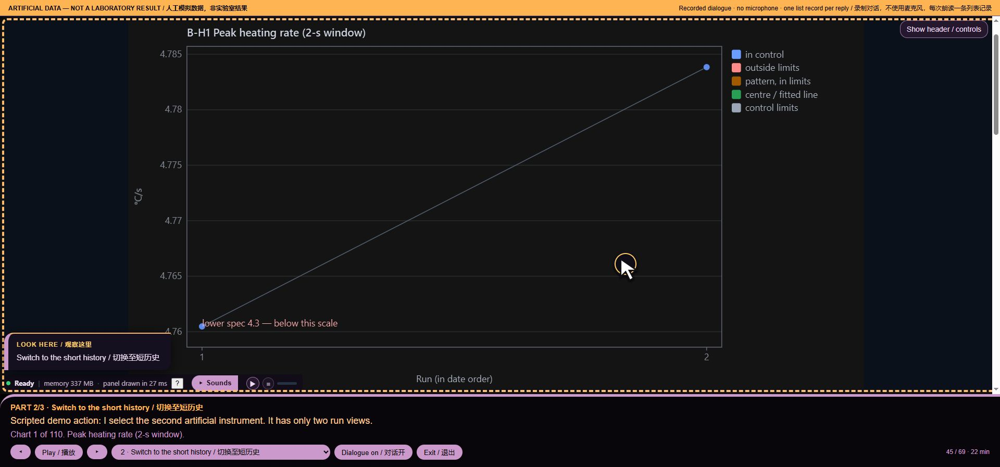
*Voice workflow step 45: Switch to the short history*
Intent: `None`. Loaded runs: 32. Recorded audio payload: 64242 bytes.
46. Missing baseline is not a pass
Operator command: Computer why has this chart no limits
MISSY: Chart review. B-H1 Peak heating rate (2-s window). 2 assessed points; 0 beyond available limits; 0 points with recorded flags. 0 missing or non-finite points; 0 before baseline. 2 points have available limits. Control baseline is not ready. No recorded flags. This is not proof that all data are nominal.
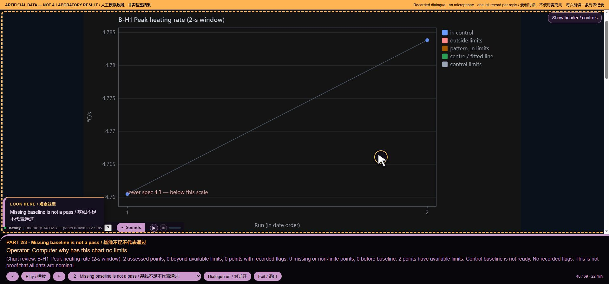
*Voice workflow step 46: Missing baseline is not a pass*
Intent: `q:analyse`. Loaded runs: 32. Recorded audio payload: 199609 bytes.
47. Open amplification data
Operator command: Computer show chart 85
MISSY: Display chart 85. Chart 85. Amplification curves coloured by SOP outcome.
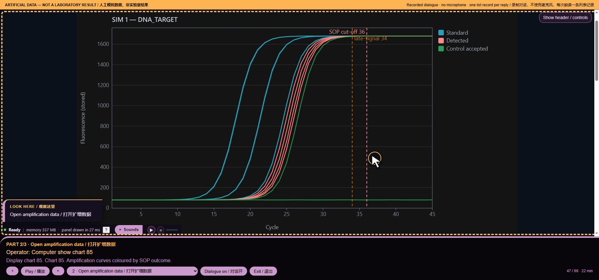
*Voice workflow step 47: Open amplification data*
Intent: `chart:85`. Loaded runs: 32. Recorded audio payload: 65653 bytes.
48. Summarise this single run
Operator command: Computer summarise the run
MISSY: Run summary. Run 1; SIM 1. 24 stored result rows; 24 included rows. Existing profile status: Accepted. This is not release approval.
Intent: `data:summary`. Loaded runs: 32. Recorded audio payload: 111446 bytes.
49. Trace the source
Operator command: Computer where did this run come from
MISSY: Source records. Run 1; source filename ARTIFICIAL_MISSY_DEMO.rdml; instrument label LC · DEMO-VIRTUAL-001; software version DEMO GENERATOR 1. Fields are recorded metadata, not independent verification.
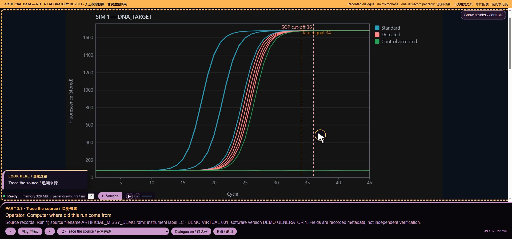
*Voice workflow step 49: Trace the source*
Intent: `data:origin`. Loaded runs: 32. Recorded audio payload: 138640 bytes.
50. Inspect the plate mapping
Operator command: Computer show chart 86
MISSY: Display chart 86. Chart 86. Plate heat map.
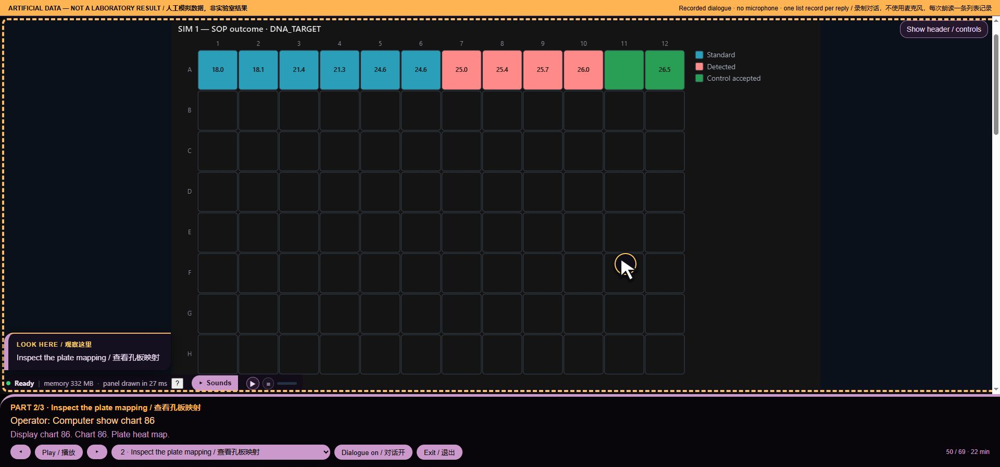
*Voice workflow step 50: Inspect the plate mapping*
Intent: `chart:86`. Loaded runs: 32. Recorded audio payload: 55674 bytes.
51. Open review
Operator command: Computer stations
MISSY: Review stations. Opened Quality and forensic review. The previous view is saved; say Computer as you were to return. This does not establish that every issue has been found.
*Voice workflow step 51: Open review*
Intent: `ship:stations`. Loaded runs: 32. Recorded audio payload: 99299 bytes.
52. Return to the saved view
Operator command: Computer as you were
MISSY: Restored the saved review-navigation view. Data, profile and downloads were not reverted.
Intent: `ship:restore`. Loaded runs: 32. Recorded audio payload: 56013 bytes.
53. Chapter 3
Scripted action: Chapter 3. Prepare the report.
MISSY: ARTIFICIAL DATA — NOT A LABORATORY RESULT. We will review provenance, prepare a real report from artificial data, and show the limits of this tool.
Intent: `None`. Loaded runs: 32. Recorded audio payload: 87883 bytes.
54. Open formats with a numbered command
Operator command: Computer seven
MISSY: Control 7. Workspace. Open formats.
Intent: `7`. Loaded runs: 32. Recorded audio payload: 47419 bytes.
55. Identify the view
Operator command: Computer where am I
MISSY: Current station. Workspace. Open formats.
Intent: `q:where`. Loaded runs: 32. Recorded audio payload: 47498 bytes.
56. Export scope
Operator command: Computer what will the export contain
MISSY: Export contents. Export scope depends on the specific export. Graph CSV uses the current graph data; interpreted result exports use the active profile and current selection; complete raw-value exports have their own scope. I have not started a download. Review Open formats and the export dictionary for the selected export.
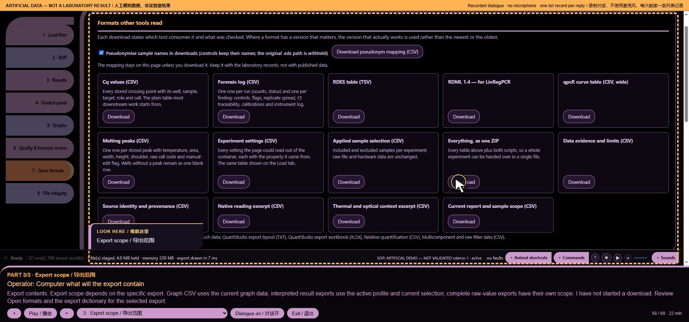
*Voice workflow step 56: Export scope*
Intent: `data:exportscope`. Loaded runs: 32. Recorded audio payload: 170822 bytes.
57. Name disclosure settings
Operator command: Computer security alert
MISSY: Integrity review. Identifier disclosure status: export pseudonymisation is on. That setting applies only to exports that implement it. Spoken sample names remain original, as you requested. No security or intrusion scan was performed; no export was started.
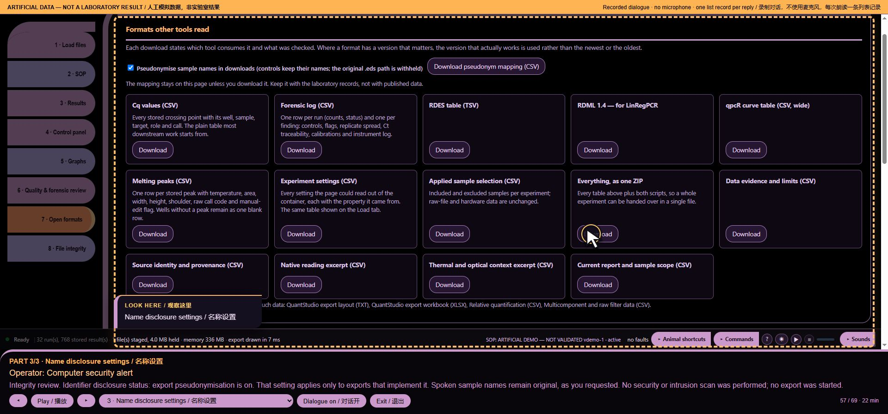
*Voice workflow step 57: Name disclosure settings*
Intent: `ship:security`. Loaded runs: 32. Recorded audio payload: 148069 bytes.
58. Open integrity
Operator command: Computer eight
MISSY: Control 8. Workspace. File integrity.
Intent: `8`. Loaded runs: 32. Recorded audio payload: 45773 bytes.
59. Read the status, with coverage limits
Operator command: Computer status report
MISSY: Status report. 32 runs; 768 stored result rows. Active profile ARTIFICIAL DEMO — NOT VALIDATED, version demo-1. 0 recorded software faults; these are not sample failures. No chart is open. Say Computer full report for the remaining observations. Unavailable checks are not evidence of a pass.
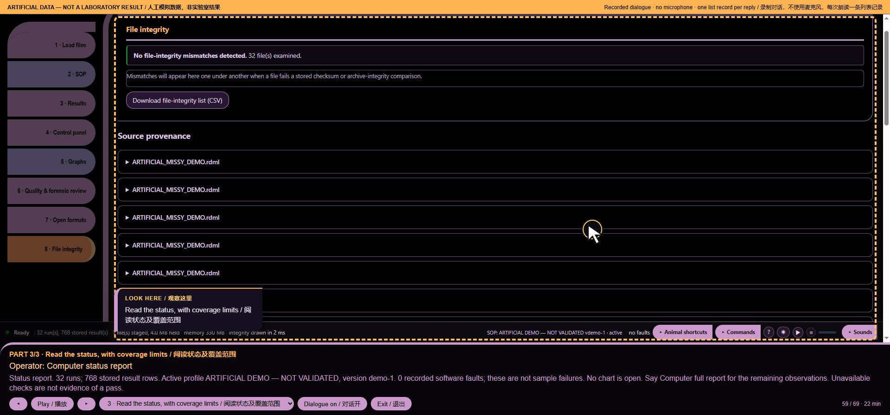
*Voice workflow step 59: Read the status, with coverage limits*
Intent: `f:report`. Loaded runs: 32. Recorded audio payload: 189578 bytes.
60. Animal shortcuts
Scripted action: I open the animal shortcuts. These are mouse actions in this demonstration.
MISSY: Available functions. Choose or drop experiment files, read them, and review sample selection.
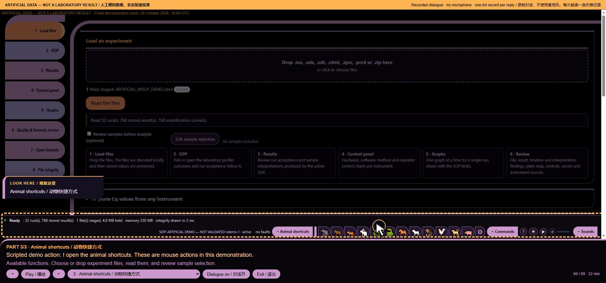
*Voice workflow step 60: Animal shortcuts*
Intent: `None`. Loaded runs: 32. Recorded audio payload: 78165 bytes.
61. Command mode
Scripted action: I open Command mode.
MISSY: Current station. Command mode. Load files.
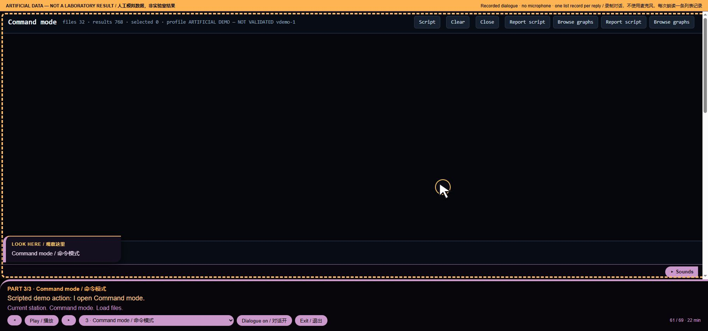
*Voice workflow step 61: Command mode*
Intent: `None`. Loaded runs: 32. Recorded audio payload: 46688 bytes.
62. Research-use boundary
Operator command: Computer are these results validated
MISSY: This is a research-use tool, not a laboratory validation certificate. You can review the method configuration and documentation for your own validation process.
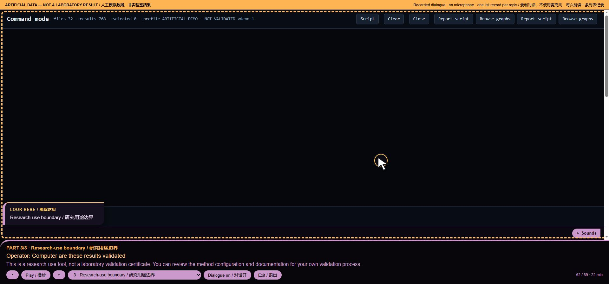
*Voice workflow step 62: Research-use boundary*
Intent: `refuse:validation`. Loaded runs: 32. Recorded audio payload: 86342 bytes.
63. No cause inferred from a curve
Operator command: Computer is this sample contaminated
MISSY: I do not infer contamination or inhibition from a curve. You can inspect recorded control results and the active method rules in Results and SOP.
*Voice workflow step 63: No cause inferred from a curve*
Intent: `refuse:cause`. Loaded runs: 32. Recorded audio payload: 78374 bytes.
64. Rules cannot be overridden by voice
Operator command: Computer override the profile
MISSY: Unable to comply. Voice does not override method rules. Review the active profile in the SOP view.
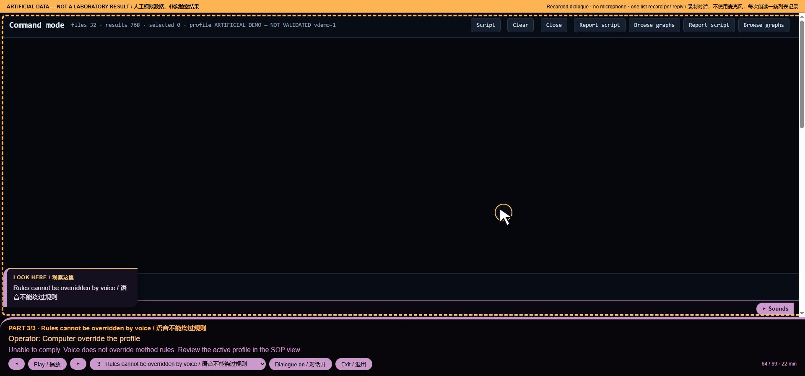
*Voice workflow step 64: Rules cannot be overridden by voice*
Intent: `o:override`. Loaded runs: 32. Recorded audio payload: 68083 bytes.
65. Release is a laboratory decision
Operator command: Computer approve this run for release
MISSY: Unable to comply. Release is a laboratory decision under your SOP. You can review the profile findings in Results; this page does not authorise release.
Intent: `refuse:release`. Loaded runs: 32. Recorded audio payload: 90861 bytes.
66. Assisted report selection
Scripted action: I select the drift and heating figures in Assisted mode. Report creation is a scripted demo action.
MISSY: Current station. Assisted mode. Load files.
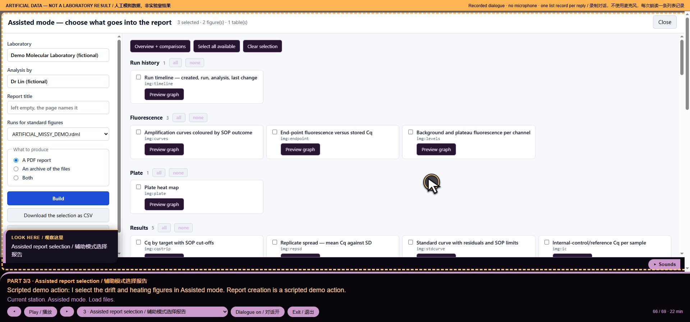
*Voice workflow step 66: Assisted report selection*
Intent: `None`. Loaded runs: 32. Recorded audio payload: 68396 bytes.
67. Build a real artificial-data report
Scripted action: I build the report locally. This does not approve laboratory results.
MISSY: Artificial-data report is ready in memory. Use Preview report to inspect the actual PDF.
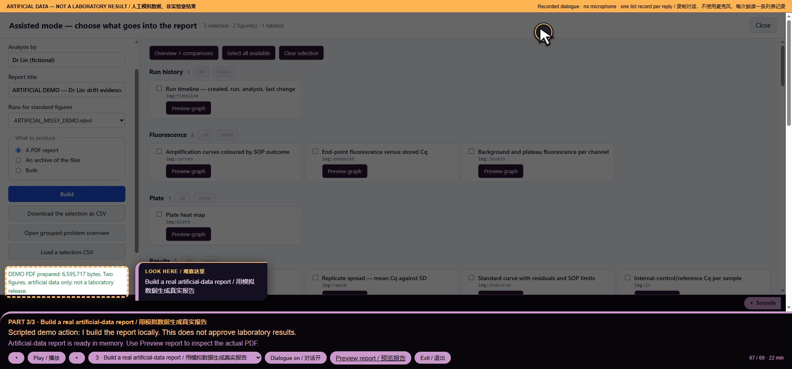
*Voice workflow step 67: Build a real artificial-data report*
Intent: `None`. Loaded runs: 32. Recorded audio payload: 71949 bytes.
68. Stand down
Operator command: Computer stand down
MISSY: Manual red alert stopped; drill label cleared. This is not a green or passing scientific verdict.
*Voice workflow step 68: Stand down*
Intent: `ship:standdown`. Loaded runs: 32. Recorded audio payload: 60298 bytes.
69. Stop the interface audio
Operator command: Computer all stop
MISSY: Voice, manual alert and background sounds stopped. File intake, rendering and instrument acquisition were not halted. Loaded run views remain.
*Voice workflow step 69: Stop the interface audio*
Intent: `ship:stop`. Loaded runs: 32. Recorded audio payload: 85663 bytes.
Guided walkthrough — 30 illustrated lessons
Artificial demonstration data; not laboratory results. Research use only. MISSY is not validated.
Captured from the public 2026.10.31.demolabels1 page on 1 November 2026. All 30 lesson descriptions are taken from the running demo. Screenshots show the webpage, not PDF reports.
1. Meet Dr Lin
Dr Lin has 32 runs to review. Six have a signal shift. Help identify the affected evidence and prepare a traceable review report — without editing original values.
*Walkthrough lesson 1: Meet Dr Lin*
2. Stage the embedded file
Start with one embedded, explicitly artificial RDML file. No laboratory files or internet are needed.
*Walkthrough lesson 2: Stage the embedded file*
3. Read the evidence
Watch the real intake read 32 artificial runs and 768 target records. Cq values, amplification curves and melting arrays stay linked.
*Walkthrough lesson 3: Read the evidence*
4. Narrow the sample scope
Dr Lin filters sample names before interpretation. Filtering is a view/selection step; it does not rewrite measurements.
*Walkthrough lesson 4: Narrow the sample scope*
5. Create a review-only SOP
A named SOP makes rules and report identity traceable. This fictional profile is not a validated method.
*Walkthrough lesson 5: Create a review-only SOP*
6. Specify targets and controls
Make thresholds and controls explicit. Absolute, relative and melting configuration fields are also available; a template alone is not a validated calculation method.
*Walkthrough lesson 6: Specify targets and controls*
7. Read the sample outcome
Inspect one run first. Cq, replicate counts, outcome and reason remain visible together. All values here are artificial.
*Walkthrough lesson 7: Read the sample outcome*
8. Find one run and sample
Use the experiment selector and text search together. Dr Lin isolates DEMO_SAMPLE_0 instead of reading hundreds of rows.
*Walkthrough lesson 8: Find one run and sample*
9. See the history at a glance
The Control panel separates hardware, software, method and operator signals. Thirty-two compatible artificial runs support a baseline.
*Walkthrough lesson 9: See the history at a glance*
10. Know the hardware reference
QuantStudio 5 specifications are manufacturer reference values for the stated block variant. Simulator measurements are labelled separately.
*Walkthrough lesson 10: Know the hardware reference*
11. Check heating stability
Chapter 2: investigate the shift. The dark chart makes the stable artificial heating history easy to see.
*Walkthrough lesson 11: Check heating stability*
12. Check cooling independently
Cooling can change independently of heating. This light-background example shows the same chart controls and readable limits.
*Walkthrough lesson 12: Check cooling independently*
13. Locate the six drifting runs
The last six runs show a deliberately increasing background. Look at the highlighted red points, not the entire page.
*Walkthrough lesson 13: Locate the six drifting runs*
14. Call attention to the drift
The tour presses the real Red alert for this artificial scenario. This scripted click does not add an automatic production alarm rule.
*Walkthrough lesson 14: Call attention to the drift*
15. Stop, then try voice Next
Stop remains available even with Sounds collapsed. Then the transcript “two” selects Next chart; no microphone is used.
*Walkthrough lesson 15: Stop, then try voice Next*
16. Open the voice menu
The transcript “four” opens View. Numbered choices change with the active menu, matching the displayed keys.
*Walkthrough lesson 16: Open the voice menu*
17. Zoom using two choices
Emulated “one”, then “two” chooses Zoom and Zoom in. The data values do not change.
*Walkthrough lesson 17: Zoom using two choices*
18. Inspect amplification
Compare the artificial sigmoid rises and the flat NTC. Stored Cq and traces stay linked to their sample and channel.
*Walkthrough lesson 18: Inspect amplification*
19. Read a calibration limitation
A high R² is not enough. This light-background standard curve spans only two log units, below the illustrative profile requirement.
*Walkthrough lesson 19: Read a calibration limitation*
20. Compare melting evidence
Two artificial products have supplied Tm values near 78 and 82 °C. The dark preview shows the retained fluorescence arrays.
*Walkthrough lesson 20: Compare melting evidence*
21. Verify the plate layout
Chapter 3: prepare traceable evidence. Check positions, roles and channels before selecting report figures.
*Walkthrough lesson 21: Verify the plate layout*
22. Compare samples
Dr Lin compares compatible samples and replicates rather than mixing targets or protocols.
*Walkthrough lesson 22: Compare samples*
23. Check grouped statistics
Review counts and grouped variability. A single grand Cq mean across different targets is not an assay conclusion.
*Walkthrough lesson 23: Check grouped statistics*
24. Trace the source evidence
Instrument records and file integrity explain where values came from. A checksum identifies bytes; it does not certify an experiment.
*Walkthrough lesson 24: Trace the source evidence*
25. Choose an open output
Exports preserve evidence and scope. The demo does not silently download files or send data to a server.
*Walkthrough lesson 25: Choose an open output*
26. Make shortcuts useful
The 12 animals can open pages or specific charts. Dr Lin can bind a shortcut to the drift chart without changing real saved assignments.
*Walkthrough lesson 26: Make shortcuts useful*
27. Keep commands and details together
Commands groups modes, status report, Details and GPL/source. The tour shows diagnostics without downloading a file.
*Walkthrough lesson 27: Keep commands and details together*
28. Use Command mode
The actual typed workflow supports explicit report selections. The tour does not run a script or trigger a download.
*Walkthrough lesson 28: Use Command mode*
29. Work in Console
The dark Console keeps charts large. Mouse, keyboard and optional local voice reach the same navigation and appearance controls.
*Walkthrough lesson 29: Work in Console*
30. Prepare the evidence, not a release
Dr Lin has isolated the drift and prepares two relevant figures for review. The actual PDF is built locally from artificial data. This does not approve results or repair hardware.
*Walkthrough lesson 30: Prepare the evidence, not a release*